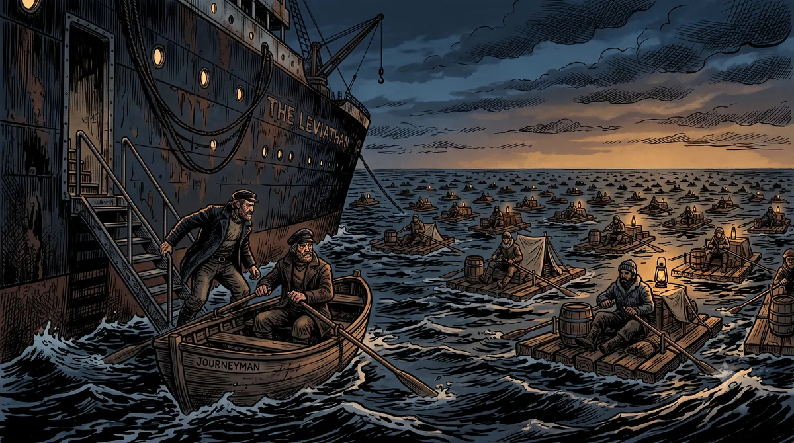
Filosofía del ConocimientoEL BALSERO Y EL TRASATLÁNTICO — Parte 4: El que remaba con orgulloEl balsero, llamado Yusuf, llevaba meses en el puente. Había aprendido a leer el mar desde arriba con la misma naturalidad con que antes lo leía desde abajo. Conocía la diferencia…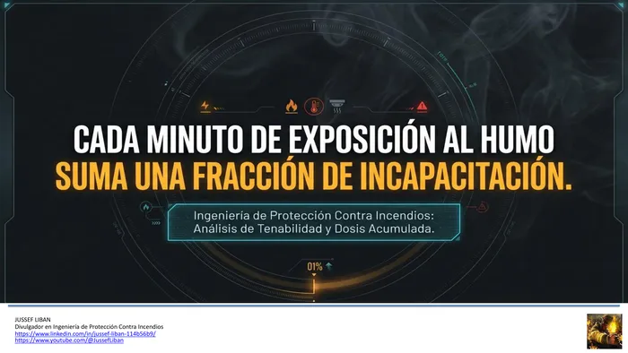
Comportamiento HumanoCADA MINUTO DE EXPOSICIÓN AL HUMO SUMA UNA FRACCIÓN DE INCAPACITACIÓNLa evaluación del riesgo para los ocupantes expuestos a los productos de un incendio requiere algo más que conocer las concentraciones de gases en un momento dado: lo que…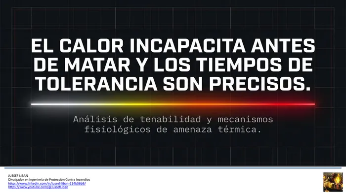
Comportamiento HumanoEL CALOR INCAPACITA ANTES DE MATAR Y LOS TIEMPOS DE TOLERANCIA SON PRECISOSEl calor es el tercer agente de incapacitación en la secuencia típica de un incendio, después de la oscuración por humo y los irritantes, y actúa a través de tres mecanismos…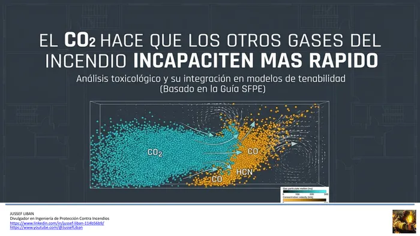
Comportamiento HumanoEL CO2 HACE QUE LOS OTROS GASES DEL INCENDIO INCAPACITEN MÁS RÁPIDOEl dióxido de carbono es universalmente producido en todos los incendios y, a las concentraciones habituales durante las fases iniciales de un fuego, no es tóxico por sí mismo;…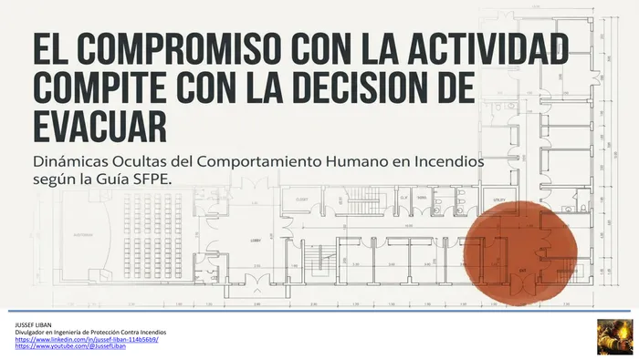
Comportamiento HumanoEL COMPROMISO CON LA ACTIVIDAD COMPITE CON LA DECISIÓN DE EVACUARLas personas entran a un edificio con un propósito, y ese propósito orienta su comportamiento incluso cuando una emergencia interrumpe el contexto en el que se desarrolla; la…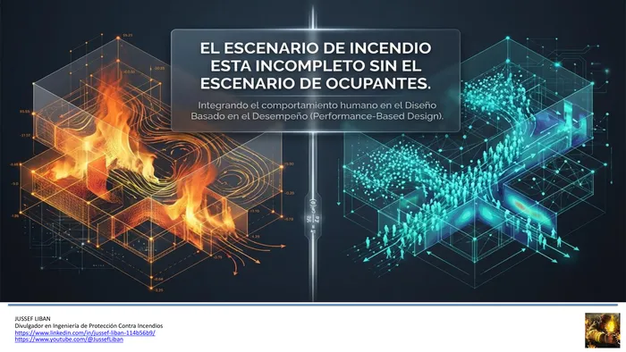
Comportamiento HumanoEL ESCENARIO DE INCENDIO ESTÁ INCOMPLETO SIN EL ESCENARIO DE OCUPANTESLos ingenieros de protección contra incendios están familiarizados con el proceso de selección de escenarios de diseño de incendio: la curva de crecimiento, la carga de…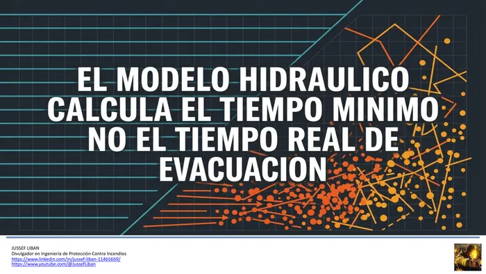
Comportamiento HumanoEL MODELO HIDRÁULICO CALCULA EL TIEMPO MÍNIMO NO EL TIEMPO REAL DE EVACUACIÓNLos cálculos de movimiento de ocupantes basados en la analogía hidráulica son la herramienta más utilizada en el análisis de egreso por su simplicidad y trazabilidad, pero el SFPE…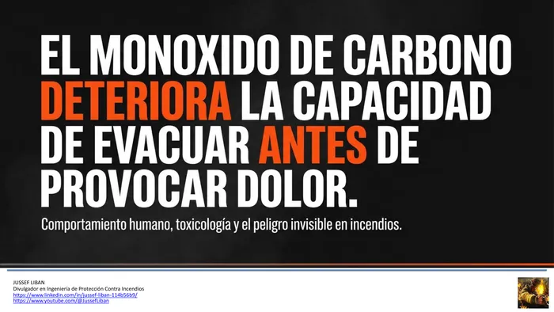
Comportamiento HumanoEL MONÓXIDO DE CARBONO DETERIORA LA CAPACIDAD DE EVACUAR ANTES DE PROVOCAR DOLORLa mayoría de los agentes de riesgo en un incendio producen señales físicas que el ocupante puede percibir: el calor genera dolor, el humo reduce la visibilidad e irrita las vías… Comportamiento HumanoEL OLFATO FALLA COMO SISTEMA DE ALERTA NOCTURNA EN INCENDIOSLa percepción de una señal de emergencia durante el sueño es cualitativamente distinta a la percepción en vigilia, y los datos que el SFPE Guide to Human Behavior in Fire reúne…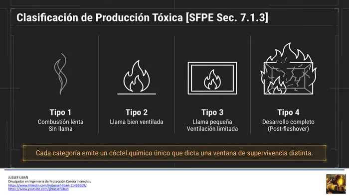
Comportamiento HumanoEL TIPO DE FUEGO DETERMINA CUÁNTO TIEMPO TIENEN LOS OCUPANTES PARA ESCAPARCalcular la dosis efectiva fraccionaria de un incendio requiere conocer las concentraciones de los gases que lo componen, y esas concentraciones varían de manera significativa…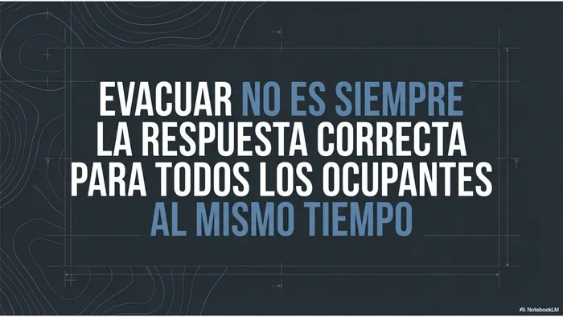
Comportamiento HumanoEVACUAR NO ES SIEMPRE LA RESPUESTA CORRECTA PARA TODOS LOS OCUPANTES AL MISMO TIEMPOLa respuesta instintiva ante un incendio es la evacuación total e inmediata de todos los ocupantes del edificio; el SFPE Guide to Human Behavior in Fire dedica su capítulo final a…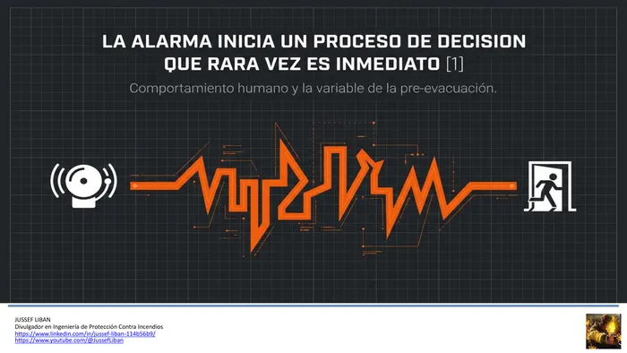
Comportamiento HumanoLA ALARMA INICIA UN PROCESO DE DECISIÓN QUE RARA VEZ ES INMEDIATOUno de los supuestos más arraigados en el diseño de sistemas de evacuación es que los ocupantes responden de manera inmediata al sonar la alarma; la evidencia empírica acumulada…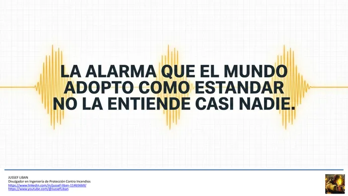
Comportamiento HumanoLA ALARMA QUE EL MUNDO ADOPTÓ COMO ESTÁNDAR NO LA ENTIENDE CASI NADIELa comprensión de una señal de alarma es una etapa distinta a su percepción: un ocupante puede escuchar perfectamente la alarma y aun así no entender que lo que está oyendo le…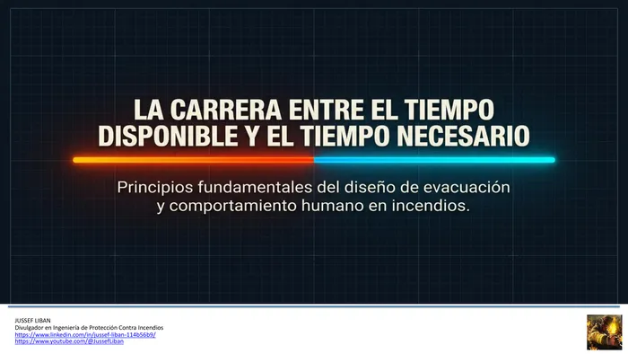
Comportamiento HumanoLA CARRERA ENTRE EL TIEMPO DISPONIBLE Y EL TIEMPO NECESARIOLa variable central del diseño de evacuación es el tiempo, y el SFPE Guide to Human Behavior in Fire lo gestiona a través de dos magnitudes: el ASET (Available Safe Egress Time,…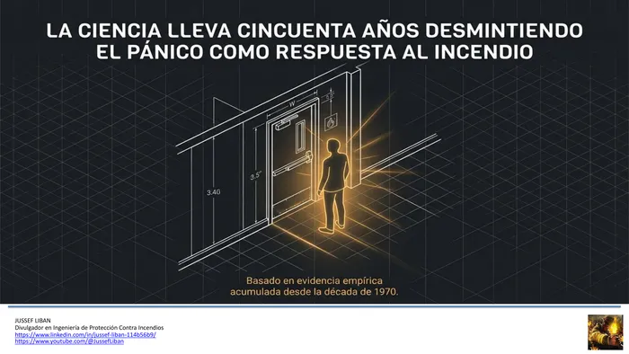
Comportamiento HumanoLA CIENCIA LLEVA CINCUENTA AÑOS DESMINTIENDO EL PÁNICO COMO RESPUESTA AL INCENDIOUno de los supuestos más persistentes sobre el comportamiento humano en emergencias es que las personas pierden el control, entran en pánico y actúan de manera irracional; ese…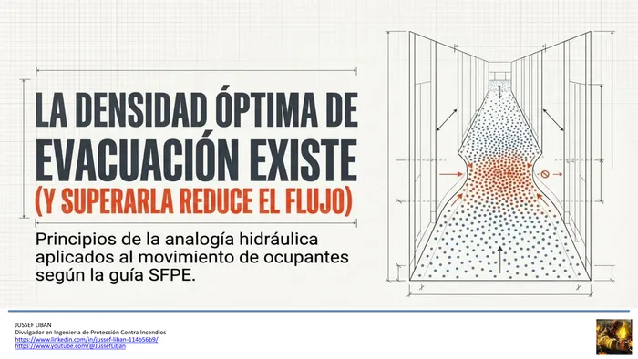
Comportamiento HumanoLA DENSIDAD ÓPTIMA DE EVACUACIÓN EXISTE Y SUPERARLA REDUCE EL FLUJOEl movimiento de ocupantes durante una evacuación obedece a principios físicos que el SFPE Guide to Human Behavior in Fire formaliza mediante una analogía hidráulica: las personas…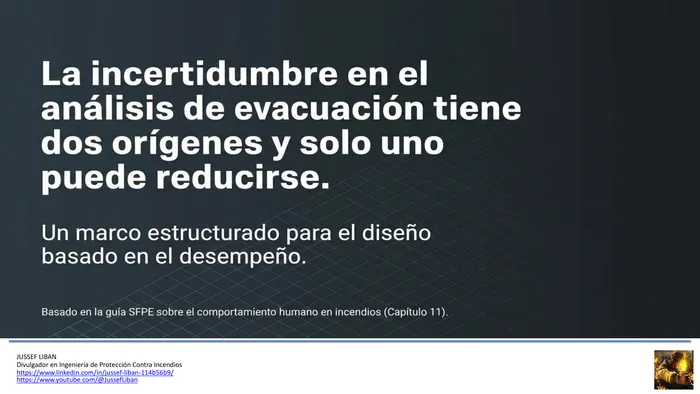
Comportamiento HumanoLA INCERTIDUMBRE EN EL ANÁLISIS DE EVACUACIÓN TIENE DOS ORÍGENES Y SOLO UNO PUEDE REDUCIRSETodo análisis de comportamiento humano en incendios opera con incertidumbre, y la forma en que esa incertidumbre se gestiona tiene consecuencias directas sobre la validez del…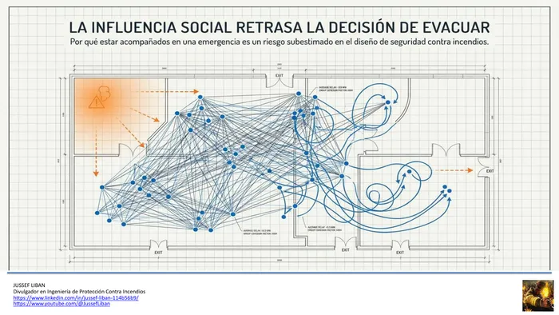
Comportamiento HumanoLA INFLUENCIA SOCIAL RETRASA LA DECISIÓN DE EVACUARLa intuición indica que la presencia de otras personas ante una emergencia de incendio es un factor protector, porque alguien puede alertar, asistir o liderar la evacuación; la… Comportamiento HumanoLA INVESTIGACIÓN SOBRE COMPORTAMIENTO EN INCENDIOS SE RESUME EN VEINTIOCHO HECHOSEl capítulo 4 del SFPE Guide to Human Behavior in Fire cierra con una síntesis de los hallazgos más sólidos de la investigación empírica sobre comportamiento humano en incendios,…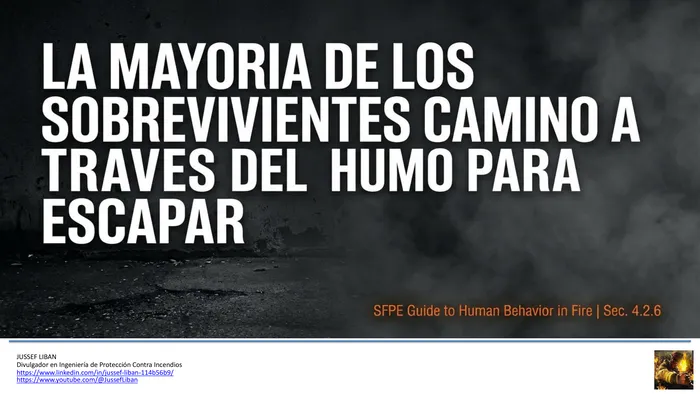
Comportamiento HumanoLA MAYORÍA DE LOS SOBREVIVIENTES CAMINÓ A TRAVÉS DEL HUMO PARA ESCAPARUn supuesto frecuente en los modelos de evacuación es que los ocupantes evitarán moverse a través de zonas con presencia de humo, redirigiendo su desplazamiento hacia rutas…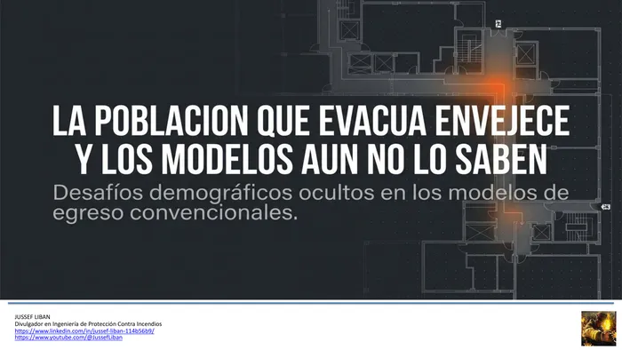
Comportamiento HumanoLA POBLACIÓN QUE EVACÚA ENVEJECE Y LOS MODELOS AÚN NO LO SABENLa edad afecta la capacidad de evacuación de una manera que los modelos de egreso convencionales raramente capturan con precisión: su efecto no es lineal ni uniforme, sino que…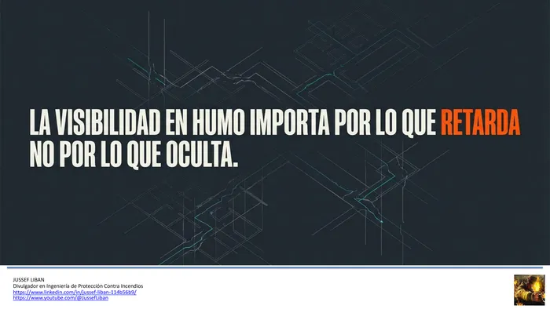
Comportamiento HumanoLA VISIBILIDAD EN HUMO IMPORTA POR LO QUE RETARDA NO POR LO QUE OCULTALa reducción de visibilidad causada por el humo es uno de los criterios de tenabilidad más utilizados en el análisis de evacuación, y también uno de los más mal comprendidos en su…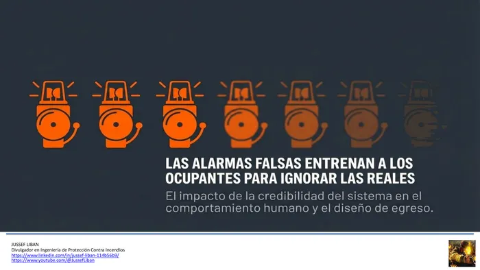
Comportamiento HumanoLAS ALARMAS FALSAS ENTRENAN A LOS OCUPANTES PARA IGNORAR LAS REALESLa credibilidad de un sistema de alarma de incendios es una variable de su desempeño tan relevante como su sensibilidad o su tiempo de respuesta, y esa credibilidad se construye o…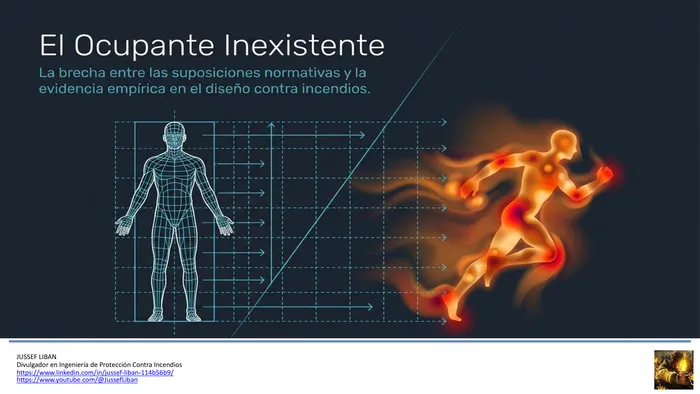
Comportamiento HumanoLAS NORMAS IMAGINAN PERSONAS QUE NO EXISTEN EN LA REALIDADLas normas de protección contra incendios contienen un modelo implícito de comportamiento humano, construido sobre suposiciones que nunca se declaran en el texto pero que…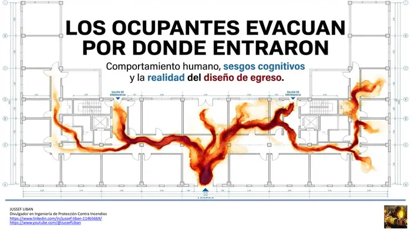
Comportamiento HumanoLOS OCUPANTES EVACUAN POR DONDE ENTRARONCuando un ocupante decide evacuar un edificio, la ruta que elige con mayor frecuencia no es la más corta ni la que indican los carteles de salida, sino la que utilizó para entrar;…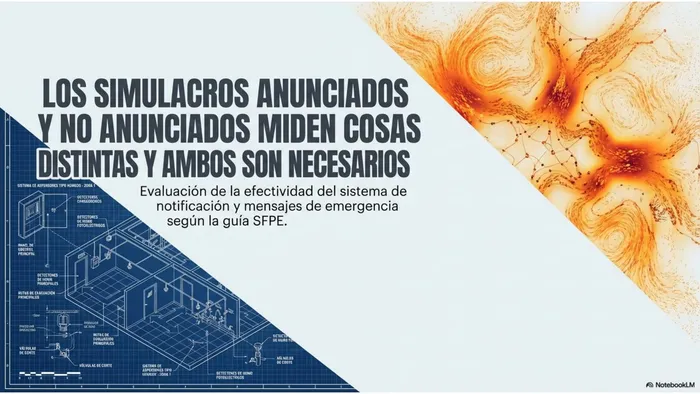
Comportamiento HumanoLOS SIMULACROS ANUNCIADOS Y NO ANUNCIADOS MIDEN COSAS DISTINTAS Y AMBOS SON NECESARIOSUn simulacro de evacuación responde siempre a una pregunta, y la pregunta que responde depende de si los ocupantes saben de antemano que se realizará; el SFPE Guide to Human…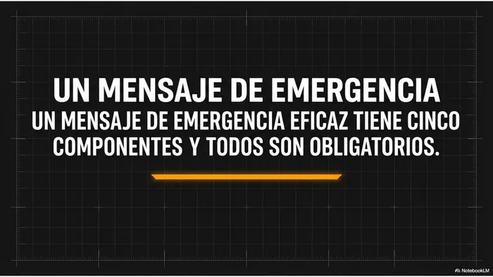
Comportamiento HumanoUN MENSAJE DE EMERGENCIA EFICAZ TIENE CINCO COMPONENTES Y TODOS SON OBLIGATORIOSLos sistemas de notificación de emergencia se evalúan habitualmente por sus características técnicas: cobertura acústica, nivel sonoro, redundancia, tiempo de activación; el SFPE…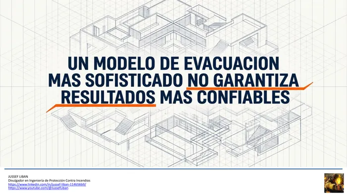
Comportamiento HumanoUN MODELO DE EVACUACIÓN MÁS SOFISTICADO NO GARANTIZA RESULTADOS MÁS CONFIABLESLa selección de un modelo de egreso es una de las decisiones técnicas menos discutidas en los informes de diseño de protección contra incendios, y el SFPE Guide to Human Behavior…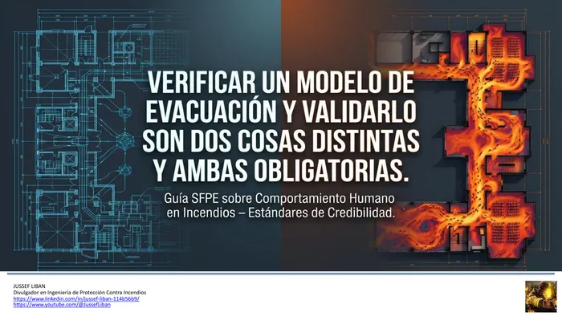
Comportamiento HumanoVERIFICAR UN MODELO DE EVACUACIÓN Y VALIDARLO SON DOS COSAS DISTINTAS Y AMBAS OBLIGATORIASEl uso de modelos de egreso computacionales en el diseño de protección contra incendios ha crecido de manera sostenida, y con ese crecimiento ha aumentado también el riesgo de…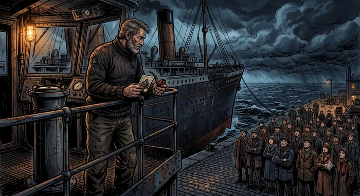
Filosofía del ConocimientoEL BALSERO Y EL TRASATLÁNTICO — Parte 3: Los que miraban desde el muelleEl balsero llevaba meses ya en el puente. Había aprendido que manejar el trasatlántico era un oficio como cualquier otro — con sus horas, sus errores y su curva larga. Que el…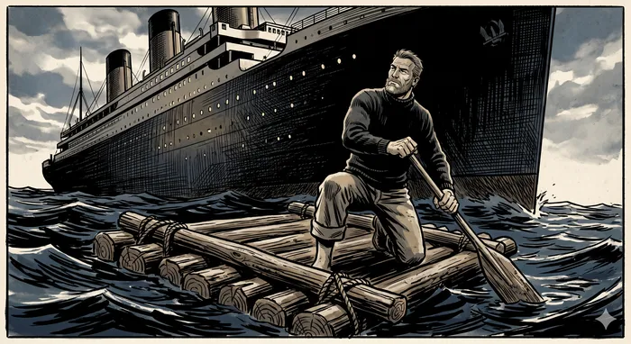
Filosofía del ConocimientoEL BALSERO Y EL TRASATLÁNTICO — Parte 2: Los que se quedaron en el marEl balsero llevaba semanas ya en el puente. Los instrumentos, las pantallas, la escala de todo — había dejado de intimidarlo. Aprendió a leer el horizonte desde esa altura con la… Filosofía del ConocimientoEL BALSERO Y EL TRASATLÁNTICO — Parte 1: El que subió a bordoHabía una vez un hombre que cruzaba el mar en una balsa. No era una balsa cualquiera. La había construido él mismo, tabla por tabla, con sus propias manos y sus propios errores.…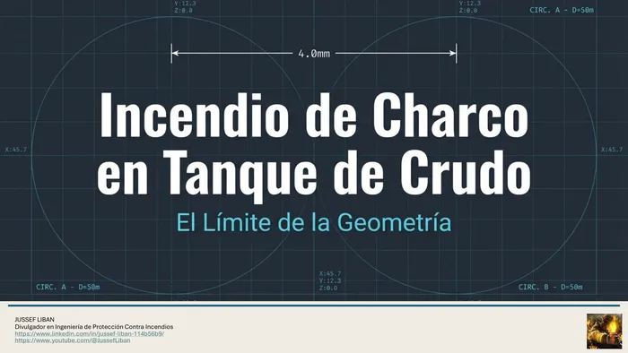
Dinámica del FuegoHRR Y RADIACIÓN EN TANQUES, UN PROBLEMA DE GEOMETRÍAEn el análisis de un incendio en un tanque de crudo de 15 metros de diámetro, hay tres resultados que llaman la atención cuando se construye el ejercicio con datos reales: una…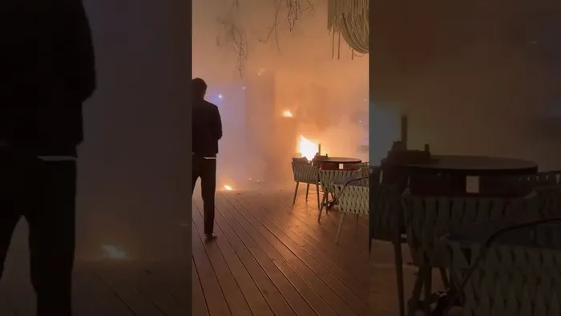
Casos Reales y LeccionesLA SUERTE NO ES UNA ESTRATEGIA DE PROTECCIÓN CONTRA INCENDIOSLo que muestra este video no es un sistema de protección funcionando bien, sino la combinación improbable de empleados que reaccionaron a tiempo, segundos favorables en la…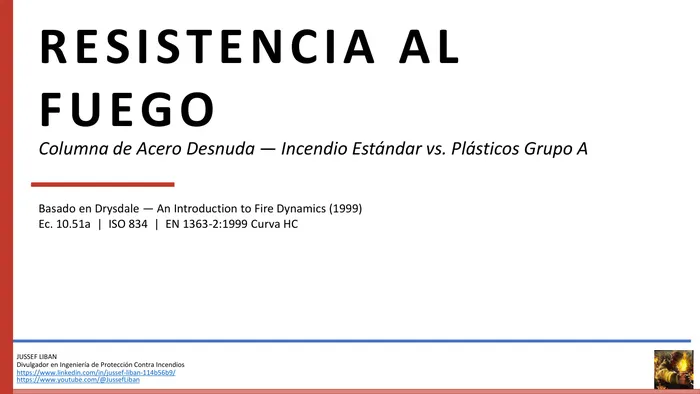
Dinámica del FuegoRESISTENCIA ESTRUCTURAL DEL ACERO EN UN ALMACEN DE PLASTICOS GRUPO ACUANDO EL INCENDIO REAL NO FUE EL QUE SE ENSAYÓ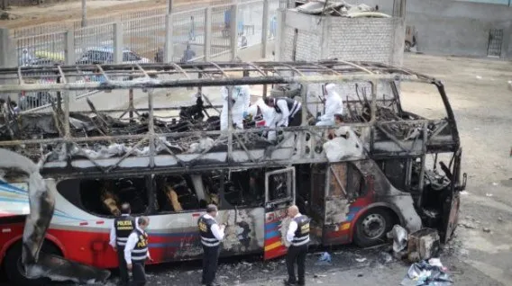
Comportamiento HumanoANÁLISIS DE EVACUACIÓN DE UN BUS DE DOS PISOSEl 31 de marzo del 2019, sucedió un lamentable incendio en un bus de dos pisos en el Perú, se adjunta videos en los precisos instantes en los que este bus se comienza a incendiar.…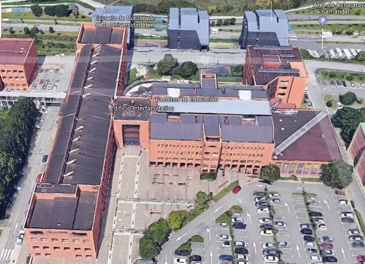
Comportamiento HumanoANÁLISIS, MODELADO Y SIMULACIÓN COMPUTACIONAL DE INCENDIOS Y EVACUACIÓN EN UNA EDIFICACION EDUCATIVA CON 2 ATRIOS DE 16 METROS DE ALTURALes presento un pequeño resumen de mi trabajo en la Universidad de Cantabria, sobre un Análisis, Modelado y Simulación Computacional de Incendios y Evacuación en una instalación…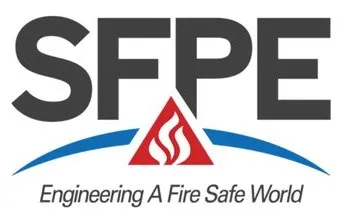
Divulgación y ReflexiónCOMPETENCIAS TÉCNICAS MÍNIMAS RECOMENDADAS PARA LA PRÁCTICA DE LA INGENIERÍA DE LA PROTECCIÓN CONTRA INCENDIOSEn el presente año la Sociedad de Ingenieros de Protección Contra Incendios (SFPE), lanzó un análisis llamado: “Competencias Técnicas Mínimas Recomendadas para la Práctica de la…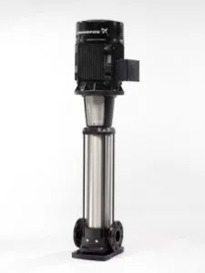
HidráulicaCRITERIOS PARA LA SELECCIÓN CORRECTA DE UNA BOMBA JOCKEYUn tema que ha causado quizás más polémica que la propia selección del caudal y presión de la bomba contra incendios, ha sido la selección correcta del caudal y presión de la… Divulgación y Reflexión¿CUÁLES SON LAS IMPLICANCIAS LEGALES DE SER UN PROYECTISTA EN PROTECCIÓN DE AGUA CONTRA INCENDIOS?Diseñar una red de agua contra incendios o un sistema de rociadores tiene por objetivo no sólo proteger propiedades sino más importante proteger vidas humanas, el que diseña un…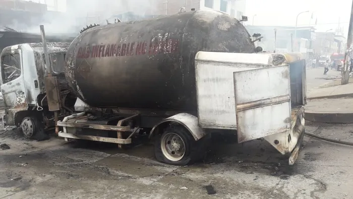
Dinámica del FuegoDEFLAGRACIONES EN GASES LICUADOS DE PETRÓLEOEl día de hoy hubo un nuevo incidente con Gas Licuado de Petróleo (GLP), hasta el momento ha dejado seis muertos. Para entender lo que sucedió y aprender de ello, se trató de una…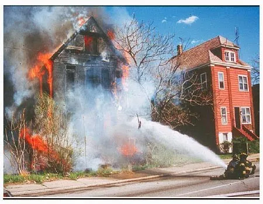
Divulgación y ReflexiónEL ATAQUE POR BOMBARDEO, LOS CHORROS HIPÓCRITAS Y LA EXPERIENCIA DEL INCENDIO EN CANGALLO: REFLEXIONES SOBRE LA PROTECCIÓN CONTRA INCENDIOS EN EL PERÚEl agua es un recurso fundamental en la lucha contra incendios, pero su uso correcto es lo que define el éxito o el fracaso en una emergencia. Aplicarla en la cantidad y momento…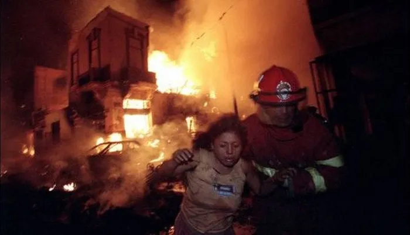
Divulgación y ReflexiónEL FUTURO DE LATINOAMÉRICA SIN FORMACIÓN ADECUADA EN PROTECCIÓN CONTRA INCENDIOSEl aumento de la población, el desarrollo de urbes y la industrialización masiva en Latinoamérica han traído consigo, junto con el progreso, la proliferación de ciudades e…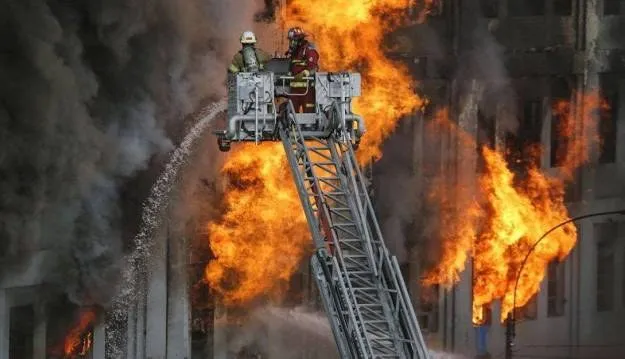
HidráulicaEL PROBLEMA DEL AGUA PARA EL COMBATE DE INCENDIOSExisten mitos que indican que el agua es un agente extintor abundante, de bajo costo, de fácil obtención y con principios básicos que lo hacen único y universal para la extinción…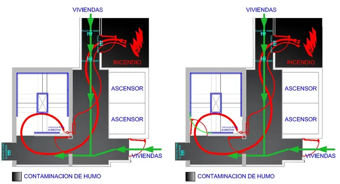
Normativa y CriterioEL PROBLEMA DEL CONTROL DE HUMOS EN LAS ESCALERAS DE EVACUACIÓN DE LAS EDIFICACIONESEn las edificaciones que puedan verse afectadas por un incendio, el control de humos en las escaleras de evacuación es una parte fundamental de la estrategia de protección a la… Divulgación y ReflexiónEL ROL DE LA AUTORIDAD COMPETENTE EN LA NORMATIVAS DE PROTECCIÓN CONTRA INCENDIOSLa NFPA está por cumplir ya 125 años desde su nacimiento allá por el año 1896 en la ciudad de Boston (EE.UU.). En todos estos años la lucha de esta organización por conocer,…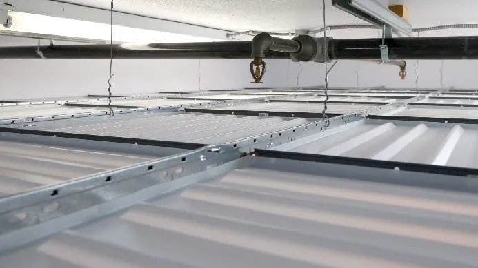
Materiales y ConstrucciónEL USO DE LOS CIELORRASOS SUSPENDIDOS Y LOS CIELORRASOS DESPRENDIBLESExiste un método de instalación de cielorrasos que ha venido ganando bastante aceptación en los EE.UU. y que todavía no vemos en nuestros países, se trata de los cielorrasos… Casos Reales y LeccionesEXPLOSIONES EN POLVOS COMESTIBLESEl 27 de Junio del 2015 una explosión en Taiwán sin precedentes sucedió en un evento de celebración de muchachos en una fiesta. Esta fiesta llamada “juego de colores” consiste en… Divulgación y ReflexiónINCENDIOS EN CENTROS DE DIVERSIÓN: APRENDA A ESTAR PREPARADO PARA AFRONTARLOSLos incendios en centros de diversión han acompañado a nuestro planeta durante toda la historia moderna, el Perú no ha sido ajeno a ellos, pues cargamos el pasivo de haber perdido…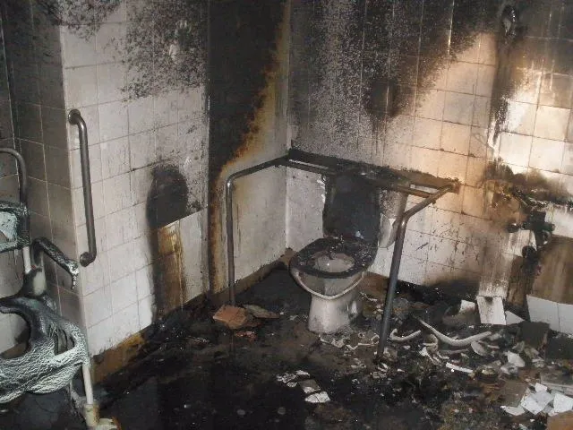
RociadoresINSTALACIÓN DE ROCIADORES EN CUARTOS DE BAÑOEl tema de la instalación de rociadores en cuartos de baño ha traído siempre un poco de polémica, situación que merece hacer un artículo tratando este asunto. La NFPA 13 jamás ha…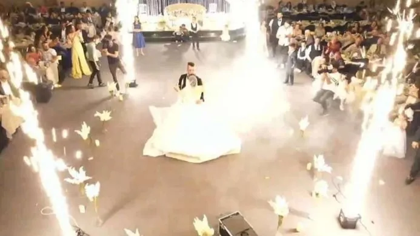
Casos Reales y LeccionesINVESTIGACIÓN SOBRE EL INCENDIO EN LA BODA DE QARAQOSH: LECCIONES PARA LATINOAMÉRICAEn septiembre de 2023, un incendio en una boda en Qaraqosh, Irak, causó la pérdida de al menos 100 vidas y dejó a 150 personas heridas. Esta tragedia ha despertado un renovado…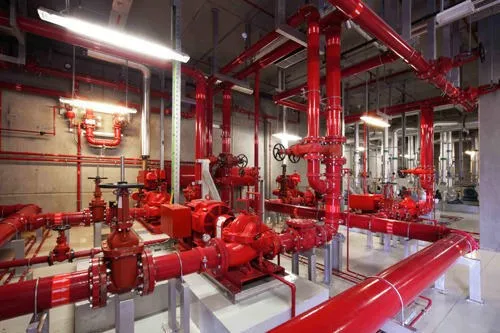
Normativa y CriterioLA CERTIFICACIÓN DE LOS SISTEMAS DE BOMBEO CONTRA INCENDIOS EN LA NORMATIVA NACIONALEl Artículo 75 del Reglamento Nacional de Edificaciones del Peru establece que las bombas contra incendios deben ser diseñadas, instaladas, probadas y mantenidas de acuerdo a la…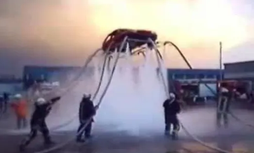
HidráulicaLA FUERZA DE REACCIÓN EN LA OPERACIÓN DE CHORROS DE AGUA CONTRA INCENDIOManejar el chorro de agua de una manguera contra incendios no es una tarea fácil, uno de los accidentes más comunes en los incendios y la razón de muchas lesiones de los bomberos…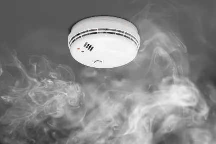
Normativa y CriterioLA IMPORTANCIA Y LIMITACIONES DE LOS SENSORES DE HUMO A BATERÍAUn detector de humo a batería es fundamental para la detección temprana de un incendio en el hogar y podría significar la diferencia entre vivir o morir. Los incendios pueden…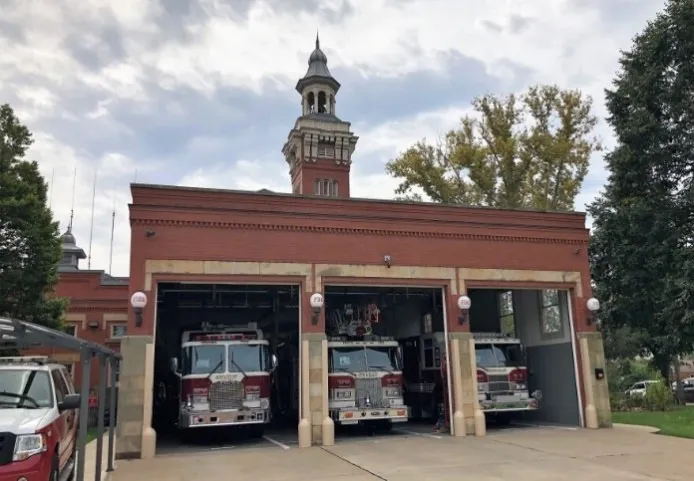
Divulgación y ReflexiónLA PROBLEMÁTICA DE LA PROTECCIÓN CONTRA INCENDIOS EN EL PERÚEn el tejido urbano de ciudades peruanas como Lima, la gestión de emergencias y, en particular, la respuesta ante incendios enfrenta desafíos significativos. Aunque la labor…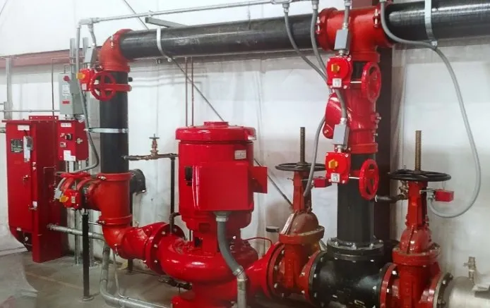
Materiales y ConstrucciónLA PROTECCIÓN A LA CORROSIÓN EN LAS TUBERÍAS DE AGUA CONTRA INCENDIOSDe acuerdo a las normas NFPA y buenas prácticas de instalación, las tuberías contra incendios deben ser protegidas contra la corrosión, este concepto ha sido llevado en muchos…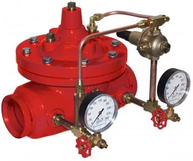
HidráulicaLAS COMPLEJIDADES DE LAS VÁLVULAS REGULADORAS DE PRESIÓN EN LOS SISTEMAS DE GABINETES DE MANGUERASLas válvulas reguladoras de presión resultan siendo todo un mundo de productos y aplicaciones dentro de la ingeniería hidráulica y las operaciones en sistemas de transporte de… HidráulicaLAS COMPLEJIDADES EN LA SELECCIÓN DE UNA BOMBA CONTRA INCENDIOSSeleccionar el rendimiento requerido de una bomba contra incendios parece ser una tarea fácil, una vez determinados los riesgos más demandantes de un sistema de agua contra… Divulgación y ReflexiónLAS MANGUERAS CONTRA INCENDIO PARA LOS OCUPANTES: ¿ESTARÁN LLEGANDO A SU FIN?Los sistemas verticales de tuberías y mangueras, pueden tener o no mangueras unidas físicamente al sistema. Ha habido continuos debates en la comunidad de protección contra… HidráulicaLAS VELOCIDADES MÁXIMAS EN LOS CÁLCULOS HIDRÁULICOSHay un estudio que se hizo en la AFSA (American Fire Sprinkler Association) por Roland Huggins y provocó un cambio en el concepto de velocidad en las tuberías para el cálculo… Dinámica del FuegoLOS EQUIPOS DE EXTINCIÓN PROPULSADOS POR NITRÓGENO: USOS, APLICACIONES Y LIMITACIONESAlgunos usuarios adquieren equipos de extinción autónomos propulsados por nitrógeno, como reemplazo a los sistemas de extinción de incendios, ya sea para reemplazar a los sistemas… RociadoresLOS ROCIADORES INTELIGENTESEl comercio típico de tienda de exhibición poco a poco está llegando a su fin, las personas cada vez más han comenzado a comprar sus bienes por internet, este negocio se ha venido… Comportamiento Humano"MANGUERAS CONTRA INCENDIO Y SU IMPORTANCIA EN LA SEGURIDAD DE LOS OCUPANTES DESDE UNA PERSPECTIVA LATINOAMERICANAEn un artículo anterior estuve comentando sobre los argumentos que existen en contra de la implementación de mangueras contra incendios para uso de los ocupantes en las… Materiales y ConstrucciónMITOS Y REALIDADES EN TUBERÍAS PARA USO CONTRA INCENDIOSHay una falsa creencia que se ha enquistado en las autoridades competentes que evalúan los proyectos de protección contra incendios y está haciendo mucho daño, esta creencia… Casos Reales y LeccionesPRUEBA DE FUEGOLa película de Netflix “Prueba de Fuego”, basada en una historia real, me causó una inusual angustia sobre el poder que podemos tener como “especialistas en protección contra… RociadoresROCIADORES INSTALADOS EN TECHOS NUBOSOSSe dice que la seguridad contra incendios está al servicio de la Arquitectura y tiene que responder a ella, no hay cosa más cierta que esa. Uno de los retos para la instalación de… Divulgación y ReflexiónSEGURIDAD CONTRA INCENDIOS AL ALCANCE DE TODOSCuando decidí colocar un slogan a mi blog de promoción de la seguridad contra incendios se me ocurrió el slogan “seguridad contra incendios al alcance de todos”. Este slogan tiene… Comportamiento HumanoSIMULACIONES DE EVACUACIÓN PARA EL ANÁLISIS DE LA SEGURIDAD EN EDIFICACIONES COMPLEJASA continuación les presento los resultados de diversas simulaciones de evacuación realizadas a una edificación muy compleja en la cual he usado el software Pathfinder. Este… Divulgación y Reflexión¿SON LOS BOMBEROS LOS DEFENSORES DE NUESTRO PATRIMONIO HISTÓRICO?A propósito de los últimos incendios en los cuales han estado involucrados patrimonios históricos, algunas autoridades y la opinión pública se han comenzado a preocupar sobre el… Materiales y ConstrucciónUNA CUESTIÓN DE PIELLos últimos incendios en Dubái, Inglaterra, Turquía, China e Italia han tenido como actor principal al material de la fachada. En la mayoría de ellos, sino en todos, el material… HidráulicaANÁLISIS DE REDES PÚBLICAS DE AGUA PARA EL SUMINISTRO DE AGUA A REDES CONTRA INCENDIO PRIVADASExisten conceptos diametralmente opuestos entre los principios de suministro de agua para la protección contra incendios que la NFPA 13 establece y aquellos de la mayoría de… Materiales y ConstrucciónEL CONCEPTO DE ALMACENAMIENTO DE AGUA PARA EL COMBATE DE INCENDIOSExisten conceptos diametralmente opuestos entre los principios de suministro de agua para la protección contra incendios que la NFPA 13 establece y aquellos de nuestra realidad… RociadoresEL PATRÓN DE DESCARGA DE LOS ROCIADORESCuando un rociador se abre y el agua es liberada, el chorro choca con el deflector y forma un patrón circular parabólico. Una primera pregunta que nace como consecuencia de esto… HidráulicaEL USO DE CAUDALES DE MANGUERA EN SISTEMAS PROTEGIDOS CON ROCIADORES AUTOMÁTICOSEl cálculo de un sistema de rociadores se realiza sobre la base de la clasificación de riesgo de una instalación. La clasificación del riesgo permite determinar la densidad de… Rociadores¿EN QUÉ SE DIFERENCIA UN SISTEMA DE TUBERÍA SECA DE UN SISTEMA DE ACCIÓN PREVIA SIN ENCLAVAMIENTO?Un sistema sin enclavamiento, deja entrar el agua a la tubería de rociadores luego de la operación de los dispositivos de detección o los rociadores automáticos. En sí se le puede… Rociadores¿EN UN EDIFICIO DE OFICINAS DE MÚLTIPLES PROPIETARIOS, ES NECESARIO QUE TODAS LAS OFICINAS QUE PERTENECEN A DIFERENTES PROPIETARIOS TENGAN SU PROPIA ESTACIÓN CONTROLADORA DE FLUJO?Según el numeral 3.3.22 de la NFPA 13, un sistema de rociadores se define como un “Sistema que consta de una red integrada de tuberías, que incluye una fuente de suministro de… Normativa y Criterio¿ES NECESARIO QUE LOS EQUIPOS Y/O MATERIALES A EMPLEAR EN UN SISTEMA DE PROTECCIÓN CONTRA INCENDIOS CUENTEN A LA VEZ CON LAS CERTIFICACIONES DE UL Y FM?Los productos LISTADOS de acuerdo a la norma NFPA 13 (2019), Numeral 3.2.3 son "Equipos, materiales o servicios incluidos en una lista publicada por una organización que es… Normativa y Criterio¿EXISTE ALGÚN LÍMITE DE PRESIÓN EN UN SISTEMA DE ROCIADORES O UNA RED DE AGUA CONTRA INCENDIOS?Un sistema de rociadores puede tener más de 175 psi sin ningún problema, de hecho todos los dispositivos que se instalan en un sistema de rociadores deben tener una presión de… RociadoresLA EFECTIVIDAD DE UN SISTEMA DE ROCIADORESA nivel general sabemos que luego de más de 100 años de que se inventó el primer rociador, la efectividad de estos dispositivos está comprobada, su uso se ha masificado y exigido… RociadoresLA HISTORIA DE LOS INICIOS DEL INVENTO DE LOS ROCIADORES AUTOMÁTICOSLos rociadores automáticos surgieron por la necesidad de proteger inmuebles y lo que ellos contenían, de tal modo que estos lugares se protegieran por si solos, es decir, en caso… RociadoresLA TECNOLOGÍA DE ACTIVACIÓN DE LOS ROCIADORES DE COBERTURA EXTENDIDAUna pregunta que siempre escuchamos es ¿Por qué los rociadores de cobertura extendida tienen bulbos de vidrio de 3 mms. y no de 5 mms?, ¿Esto quiere decir que todos los rociadores… Dinámica del FuegoLA TEMPERATURA DE UN INCENDIOUna pregunta muy común que los periodistas hacen a los bomberos es: ¿Qué temperatura desarrolló el incendio?. Entiendo que debe ser muy presionador para un bombero, como autoridad… RociadoresLOS SISTEMAS DE ACCIÓN PREVIA, USOS Y APLICACIONESDe acuerdo al numeral 3.4.10 de la norma NFPA 13, “Un Sistema de Acción Previa es un sistema que emplea rociadores automáticos que están conectados a un sistema de tuberías que… Rociadores¿POR QUÉ LA ALTURA DEL ANÁLISIS DE SUPERVIVENCIA DE LOS ROCIADORES RESIDENCIALES ES 5 PIES Y NO ES UN MAYOR VALOR? ¿CÓMO SE TRATA ESTE TEMA CON LOS DISCAPACITADOS?Los rociadores residenciales son probados por su capacidad para cumplir con un criterio específico de seguridad a la vida. Este criterio incluye la temperatura, el oxígeno y los… Rociadores¿POR QUÉ SON LOS ROCIADORES DE RESPUESTA RÁPIDA NECESARIOS EN LOS RIESGOS LEVES?Los Rociadores de respuesta rápida se consideran necesarios debido a sus beneficios de seguridad a la vida. La evidencia indica claramente que el uso de rociadores de respuesta… RociadoresPROTECCIÓN CONTRA INCENDIOS CON ROCIADORES RESIDENCIALES EN UNIDADES DE VIVIENDAEl numeral 3.3.10 de la norma NFPA 13 define Unidad de vivienda (para el propósito de instalaciones de sistemas de rociadores) como una o más habitaciones para uso de una o más… Normativa y Criterio¿SE DEBEN PINTAR LAS TUBERÍAS DE AGUA CONTRA INCENDIOS COLOR ROJO?En mis años (que no son pocos), dedicado al diseño e instalación de Sistemas Contra Incendios, he sido víctima de “mitos”. Los mitos son creencias imaginarias de la gente que se… Rociadores¿SE DEBEN PROTEGER CON ROCIADORES LAS SALAS DE EQUIPOS ELÉCTRICOS EN LOS EDIFICIOS?El numeral 8.1.1 (1) de la norma NFPA 13-2016, establece que los rociadores deben instalarse en la totalidad de una edificación. Sin embargo, ciertas disposiciones permiten que se… Dinámica del FuegoA MEDIO METRO DE DIAMETRO NINGUN COMBUSTIBLE ARDE A SU MAXIMA INTENSIDADCuando un líquido inflamable se derrama y forma un charco, la intensidad con la que arde no depende solo del combustible sino también del tamaño del charco. El ejercicio 5.6 de… Dinámica del FuegoABRIR UNA VENTANA DURANTE UN INCENDIO PUEDE SALVARTE LA VIDA PERO TAMBIEN ACELERAR EL DESENLACE𝗣𝗘𝗥𝗢 𝗧𝗔𝗠𝗕𝗜É𝗡 𝗣𝗨𝗘𝗗𝗘 𝗔𝗖𝗘𝗟𝗘𝗥𝗔𝗥 𝗘𝗟 𝗗𝗘𝗦𝗘𝗡𝗟𝗔𝗖𝗘. Dinámica del FuegoAISLAR UNA PARED PUEDE SUBIR LA TEMPERATURA INTERNA A 963 GRADOSHay una decisión que parece correcta y puede ser catastrófica: aislar una pared que está siendo atacada por un incendio. La cara del almacén baja de 239°C a 31°C, el flujo de… Dinámica del FuegoANÁLISIS EXPERIMENTAL DE LA RESISTENCIA AL FUEGO EN MUROS DE ALBAÑILERÍA SÍLICO-CALCÁREA𝗟𝗢 𝗤𝗨𝗘 𝗢𝗖𝗨𝗥𝗥𝗘 𝗖𝗨𝗔𝗡𝗗𝗢 𝗟𝗢𝗦 𝗔𝗟𝗩𝗘𝗢𝗟𝗢𝗦 𝗦𝗘 𝗟𝗟𝗘𝗡𝗔𝗡 Dinámica del FuegoARRHENIUS CUANDO LA TEMPERATURA NO AUMENTA LOS PROCESOS, LOS DISPARACuando estudié mi maestría hubo una ecuación que me impactó profundamente. No era particularmente larga ni difícil. Era la ecuación de Arrhenius. CÓMO VACIAR UN EQUIPO CON GAS SIN QUE EXPLOTEEn cualquier instalación que maneje gases combustibles, hay una operación que se repite miles de veces al año y que encierra un riesgo que no siempre se gestiona con el rigor que… Dinámica del FuegoCUÁNTO CALOR LLEGA AL TECHO Y A QUÉ DISTANCIAUn fuego de 1.5 MW en un recinto de 4 metros de altura produce 240°C directamente sobre su eje, 90°C a 4 metros del eje y 64°C a 8 metros. Esa caída de temperatura no es… Dinámica del FuegoCUÁNTO HUMO PUEDE EXTRAER UN VENTILADOR ANTES DE QUE LA CAPA DE HUMO DESCIENDAEn edificios de gran altura, la extracción mecánica de humo es uno de los sistemas de protección más críticos para garantizar la evacuación segura. Sin embargo, el… Dinámica del FuegoCUANDO EL AGUA EN EL FONDO DE UN TANQUE SE CONVIERTE EN ARMA LETALHoras después de iniciado un incendio en un tanque de crudo, cuando el fuego parece controlado y los equipos de emergencia mantienen su posición, una columna de petróleo en llamas… Dinámica del FuegoCUANDO EL INCENDIO FLUYEHay dos formas en que un sólido puede arder, y la diferencia entre una y otra cambia completamente la forma en que se propaga un incendio y la forma en que se puede controlar. Dinámica del FuegoCUANDO UNA EXPLOSIÓN LENTA SE CONVIERTE EN DETONACIÓNNo todas las explosiones son iguales. Una deflagración es una explosión lenta en la que la llama se propaga a velocidades de metros por segundo, generando sobrepresiones… Dinámica del FuegoDÓNDE EMPIEZA EL FUEGO IMPORTA TANTO COMO SU TAMAÑOUn fuego en el centro de un recinto necesita casi 900 kW para activar un detector de calor. El mismo detector, con el mismo espaciado, se activa con apenas 275 kW si el fuego está… Dinámica del FuegoDINÁMICA DE LA TRANSFERENCIA DE CALOR A TRAVÉS DE MUROSCuando pensamos en un incendio en un recinto contiguo, solemos imaginar que el peligro aparece solo cuando el fuego atraviesa la barrera. Sin embargo, incluso si el muro permanece… Dinámica del FuegoDINÁMICA DE MASAS EN INCENDIOS, EL FUEGO COMO MOTOR DE AIRECuando pensamos en un incendio solemos imaginar combustible ardiendo y calor liberándose. Sin embargo, desde el punto de vista de la dinámica de fluidos, un incendio también puede… Dinámica del FuegoDISENAR UN FUEGO DE LABORATORIO NO ES TAN SIMPLE COMO PARECEPara reproducir un incendio de 750 kW en laboratorio durante 10 minutos, el primer instinto es buscar cuánto combustible se necesita y en qué recipiente. Pero la física del fuego… Dinámica del FuegoEL CHORRO DE TECHO Y LA RESPUESTA DE LOS DETECTORESCuando la pluma de un incendio alcanza el techo, no se detiene: se desvía horizontalmente y forma lo que Drysdale describe en la Sección 4.3.3.2 como el chorro de techo, una capa… Dinámica del FuegoEL DILEMA DE LA VENTILACIÓN EL MISMO GESTO QUE TE DA TIEMPO, TE LO QUITA𝗘𝗟 𝗠𝗜𝗦𝗠𝗢 𝗚𝗘𝗦𝗧𝗢 𝗤𝗨𝗘 𝗧𝗘 𝗗𝗔 𝗧𝗜𝗘𝗠𝗣𝗢, 𝗧𝗘 𝗟𝗢 𝗤𝗨𝗜𝗧𝗔 Dinámica del FuegoEL EFECTO SINÉRGICO DE LA RADIACIÓN EN ESPACIOS CONFINADOSCuando dos superficies están próximas y una de ellas está caliente, la otra no necesita estar en contacto con el fuego para calentarse significativamente. La radiación viaja entre… Dinámica del FuegoEL FUEGO CALIENTA LO QUE NO TOCAHay tres mecanismos por los que el calor se transfiere en un incendio: conducción, convección y radiación. Los tres coexisten en cualquier fuego, pero no tienen el mismo peso en… Dinámica del FuegoEL FUEGO NO ES SOLO QUÍMICAEsto es lo primero que dice Dougal Drysdale en la página 1 de "An Introduction to Fire Dynamics", y es probablemente la idea más importante del libro: aunque el fuego es una… Dinámica del FuegoEL HOMBRE DETRÁS DEL LIBROHay algo que los prólogos de Drysdale revelan y que ninguna ecuación podría explicar. Dinámica del FuegoEL HOMBRE QUE LE PUSO FÍSICA AL FUEGOHay libros que se escriben para estudiar y libros que se escriben para cambiar una disciplina. "An Introduction to Fire Dynamics", de Dougal Drysdale, es del segundo tipo, y antes… Dinámica del FuegoEL INCENDIO NO ES SOLO UN FUEGO, ES UNA MAQUINA TERMODINÁMICAEn la ingeniería de protección contra incendios solemos analizar el fuego como un fenómeno químico simple: combustible ardiendo. Pero cuando observamos lo que ocurre dentro de un… Dinámica del FuegoEL LÍMITE DE INFLAMABILIDAD DE UNA MEZCLA NO ES EL PROMEDIO DE SUS COMPONENTESEn la industria de proceso es común trabajar con mezclas de gases combustibles. El gas natural contiene metano, etano, propano y butano en proporciones que varían según la fuente,… Dinámica del FuegoEL MATERIAL QUE APAGA SU PROPIA LLAMA Y MATA A LAS PERSONASEl PVC rígido tiene una de las clasificaciones de inflamabilidad más bajas entre los polímeros sintéticos, y la razón es química: cuando se calienta por encima de 250°C comienza a… Dinámica del FuegoEL MATERIAL QUE MEJOR AISLA SE CALIENTA MAS EN SUPERFICIEBajo las mismas condiciones de exposición, el pino amarillo y un tablero de fibra aislante alcanzan temperaturas superficiales completamente distintas: el pino llega a 54°C y la… Dinámica del FuegoEL MEJOR EXTINTOR QUE EXISTIÓ Y POR QUÉ LO PROHIBIERONLos halones — en particular el Halon 1301 y el Halon 1211 — fueron durante décadas los agentes extintores más eficaces disponibles para la protección de equipos electrónicos,… Dinámica del FuegoEL MITO DE LA CARGA VS. LA REALIDAD DE LA POTENCIAEl mito de la carga de fuego vs. la realidad de la potencia Dinámica del FuegoEL MITO DE QUE EL CALOR SOLO AFECTA EL PUNTO DONDE ESTÁ EL FUEGOEl mito de que el calor solo afecta el punto donde está el fuego Dinámica del FuegoEL MODELO DE LAS 4 ETAPAS DEL INCENDIO LA SIMPLIFICACIÓN Y DOGMA𝗖𝗨𝗔𝗡𝗗𝗢 𝗟𝗔 𝗦𝗜𝗠𝗣𝗟𝗜𝗙𝗜𝗖𝗔𝗖𝗜Ó𝗡 𝗦𝗘 𝗖𝗢𝗡𝗩𝗜𝗘𝗥𝗧𝗘 𝗘𝗡 𝗗𝗢𝗚𝗠𝗔 Dinámica del FuegoEL MOTOR INVISIBLE DE UN INCENDIO, POR QUÉ LOS EDIFICIOS “RESPIRAN” HUMO𝗣𝗢𝗥 𝗤𝗨É 𝗟𝗢𝗦 𝗘𝗗𝗜𝗙𝗜𝗖𝗜𝗢𝗦 “𝗥𝗘𝗦𝗣𝗜𝗥𝗔𝗡” 𝗛𝗨𝗠𝗢 Dinámica del FuegoEL NIVEL DE OXÍGENO QUE LO CAMBIA TODOHay una pregunta que muy pocos se hacen cuando diseñan la protección de un espacio con gas combustible: ¿cuánto oxígeno necesita el fuego para existir? No cuánto combustible hay,… Dinámica del FuegoEL NUMERO QUE PREDICE LA VORACIDAD DE UN INCENDIOEn seguridad de procesos, solemos confiar en el flashpoint para clasificar el peligro de un líquido inflamable. Sin embargo, dos líquidos con el mismo punto de inflamación pueden… Dinámica del FuegoEL VENENO QUE PRODUCE EL INCENDIO ANTES DE QUE EL FUEGO SE VEAEn un incendio en espacio confinado — un almacén cerrado, un sótano, un recinto con ventilación limitada — hay un momento en que el fuego necesita más oxígeno del que puede… Dinámica del FuegoFLASHPOINT Y FIREPOINT DOS CONCEPTOS QUE NO SON LO MISMOHay una diferencia crucial entre un líquido que puede encenderse y uno que puede arder sostenidamente, y esa diferencia determina si lo que tenemos delante es una emergencia… Dinámica del FuegoINERCIA TÉRMICA, EL ESCUDO DE LADRILLO VS. LA TRAMPA DEL AISLAMIENTOImaginemos una habitación pequeña: 3 × 3 × 2.4 m. Un incendio de mobiliario desarrolla una potencia promedio de 500 kW durante 30 minutos. Ese incendio libera aproximadamente 900… Dinámica del FuegoLA ALTURA DE LLAMA NO DEPENDE DE LO QUE SE PIENSALa altura de la llama de un incendio es uno de los parámetros más visibles y al mismo tiempo más malinterpretados en la ingeniería de incendios. La intuición sugiere que una llama… Dinámica del FuegoLA CANTIDAD DE ENERGÍA QUE NECESITA UNA EXPLOSIÓNLa energía mínima de ignición de una mezcla de gas con aire es la cantidad mínima de energía que necesita una chispa para encender esa mezcla en su composición más reactiva. Los… Dinámica del FuegoLA CEGUERA DE LA UBICACIÓN (EL EFECTO ESQUINA)En los análisis tradicionales de riesgo de incendio, la severidad del escenario suele evaluarse a partir de la potencia del incendio o de la carga de combustible. Sin embargo, la… Dinámica del FuegoLA FISICA DEJA HUELLAS QUE SE PUEDEN CALCULARNo estuviste en el incendio. No mediste la llama. No viste cuánto ardió. Pero si sabes cuánto bajó el nivel del líquido en el tanque y cuánto tiempo duró el incendio, puedes… Dinámica del FuegoLA FISICA DEL DESASTRE, POR QUÉ UNA FACHADA PUEDE ARDER EN MINUTOSEn protección contra incendios el tiempo rara vez se comporta de forma lineal. En ciertos escenarios el crecimiento del fuego sigue dinámicas cercanas a procesos exponenciales,… Dinámica del FuegoLA GEOMETRÍA QUE NADIE CALCULA CUANDO DISEÑAEl flujo de calor radiante que recibe una superficie no depende solo de la temperatura de la fuente, depende también de cómo están orientadas geométricamente la fuente y el… Materiales y ConstrucciónLA IMPORTANCIA DE UNA SIMPLE PUERTA EN LA SEGURIDAD CONTRA INCENDIOSEn El Perú y en muchos países de Latinoamérica, la protección contra incendios se enfoca principalmente en la instalación de sistemas activos, como bombas contra incendio,… Dinámica del FuegoLA LLAMA QUE NO SE VE Y NO SE APAGAUn incendio de metanol puede estar ardiendo frente a nosotros y no verlo. Su llama es casi transparente, de un azul pálido apenas perceptible a la luz del día, y esa invisibilidad… Dinámica del FuegoLA RESISTENCIA AL FUEGO ES COMO LA RESISTENCIA ELÉCTRICACuando un incendio calienta una pared, el calor no la atraviesa de golpe. Lo hace capa por capa, y cada capa opone resistencia. Drysdale explica en la Sección 2.2.1 que el flujo… Dinámica del FuegoLA TASA DE CARBONIZACION Y EL MITO DE ESTIMAR EL TIEMPO DE UN INCENDIODurante décadas, los investigadores de incendios usaron una regla aparentemente simple: medir la profundidad del carbón en las vigas de madera y dividirla entre una tasa fija de… Dinámica del FuegoLA TRAMPA DEL 'RIESGO LEVE' LA VENTANA COMO VÁLVULA DE SEGURIDADLa ventana como válvula de seguridad: el balance de energía que la norma ignora Dinámica del FuegoLA TRAMPA DEL 'RIESGO LEVE' POR QUÉ LA INGENIERÍA PRESCRIPTIVA FALLA ANTE LA DINÁMICA DE INCENDIOSPor qué la ingeniería prescriptiva falla ante la dinámica de incendios Dinámica del FuegoLA VARIABLE QUE DECIDE CUÁNDO SE INCENDIA UN MATERIALDos materiales expuestos al mismo flujo de calor durante el mismo tiempo no alcanzan la misma temperatura superficial. Uno puede llegar a su temperatura de ignición en segundos… Dinámica del FuegoLA VARIABLE QUE NADIE MIDE EN UN INCENDIOCuando se evalúa el riesgo de incendio de una instalación, la pregunta habitual es cuánto material combustible hay y qué tipo de material es. Es la pregunta correcta, pero… Dinámica del FuegoLO QUE NADIE CUENTA SOBRE LOS LÍMITES DE INFLAMABILIDADLos límites de inflamabilidad que aparecen en las fichas de seguridad de los productos químicos — el LIE y el LSE — se miden y publican a temperatura ambiente y presión… Dinámica del FuegoLONGITUD DE LA LLAMA HESKESTADCuando observamos un incendio interpretamos el tamaño de la llama de forma intuitiva. Es común pensar que una llama más grande simplemente significa un fuego “más caliente” o un… Dinámica del FuegoMATERIALES TERMICAMENTE DELGADOS Y GRUESOS𝗨𝗻𝗮 𝗱𝗶𝘀𝘁𝗶𝗻𝗰𝗶ó𝗻 𝗳𝘂𝗻𝗱𝗮𝗺𝗲𝗻𝘁𝗮𝗹 𝗽𝗮𝗿𝗮 𝗲𝗻𝘁𝗲𝗻𝗱𝗲𝗿 𝗹𝗮 𝗶𝗴𝗻𝗶𝗰𝗶ó𝗻 𝗱𝗲 𝗹𝗼𝘀 𝗰𝗼𝗺𝗯𝘂𝘀𝘁𝗶𝗯𝗹𝗲𝘀 𝘀ó𝗹𝗶𝗱𝗼𝘀 Dinámica del FuegoNO TODO ES KW, EL ERROR DE MIRAR SOLO LA POTENCIA DEL INCENDIOEn ingeniería contra incendios hemos aprendido a hablar en términos de kW. Curvas de crecimiento, incendios t², picos de liberación de calor. Todo gira alrededor de la potencia.… Dinámica del FuegoPOR QUÉ DOS MATERIALES A LA MISMA TEMPERATURA SE SIENTEN DIFERENTESi tocas simultáneamente una barra de metal y un trozo de madera que están en la misma habitación a la misma temperatura, el metal se siente frío y la madera no. No es una ilusión… Dinámica del FuegoPOR QUÉ EL ACERO FALLA ANTES QUE EL HORMIGÓNEl acero y el hormigón son los dos materiales estructurales más utilizados en edificios industriales, y ambos son incombustibles. Ninguno arde. Sin embargo, bajo la misma… Dinámica del FuegoPOR QUÉ EL HIDRÓGENO ES OCHO VECES MÁS PELIGROSO QUE EL GAS NATURALLa velocidad de propagación de llama — la velocidad a la que una llama avanza a través de una mezcla inflamable — es una de las variables que más diferencia el comportamiento de… Dinámica del FuegoPOR QUÉ EL MEJOR EXTINTOR NO ENFRIABA NI SOFOCABA LA INHIBICIÓN DE LAS REACCIONES EN CADENALa mayoría aprendimos que para apagar un fuego hay que quitarle el combustible, el oxígeno o el calor. Es correcto, pero incompleto. Drysdale explica en la Sección 1.2.4 que… Dinámica del FuegoPOR QUÉ EL VIENTO CAMBIA COMPLETAMENTE LA FÍSICA DE UN INCENDIOLos modelos de separación entre equipos en plantas de proceso suelen calcularse asumiendo una llama vertical. Esa suposición es razonable en condiciones de calma, pero en… Dinámica del FuegoPOR QUÉ LAS ESTRUCTURAS COLAPSAN ANTES DE QUE EL FUEGO LAS TOQUEUna llama de propano en condiciones estequiométricas — es decir, con la proporción exacta de combustible y aire para una combustión completa — alcanza una temperatura real medida… Dinámica del FuegoPOR QUÉ LOS DETECTORES EN LOS ATRIOS PUEDEN NO ACTIVARUn detector de humo montado en el techo de un atrio de gran altura puede no activar ante un incendio real, no porque esté mal calibrado ni porque el fuego sea pequeño, sino porque… Dinámica del FuegoPOR QUÉ LOS ROCIADORES PUEDEN FALLAR CONTRA INCENDIOS GRANDESUn rociador activa, descarga agua y aun así el incendio sigue creciendo. Ese escenario no es un fallo del rociador en sentido estricto: es una consecuencia de la física de la… Dinámica del FuegoPOR QUÉ UN ALMACÉN DE PLÁSTICOS NO ES LO MISMO QUE UN ALMACÉN DE MADERAUn kilo de madera y un kilo de polietileno pesan lo mismo. Ocupan un volumen similar. Pueden estar en el mismo almacén, en los mismos estantes, con la misma densidad de material… Dinámica del FuegoPOR QUÉ UN AVIÓN ES MÁS PELIGROSO A CIERTA ALTURAEl espacio vacío sobre el combustible en el tanque de un avión no está realmente vacío. Está lleno de vapor de combustible mezclado con aire, y esa mezcla puede ser inflamable o… Dinámica del FuegoPOR QUÉ UN FUEGO EN UNA ESQUINA NO ES EL MISMO FUEGO QUE EN CAMPO ABIERTOUn incendio que libera exactamente la misma energía puede comportarse de forma muy distinta dependiendo de dónde está ubicado dentro de un espacio. No por la cantidad de… Dinámica del FuegoPOR QUÉ UN GAS COMBUSTIBLE NO SIEMPRE ARDEUna fuga de gas natural en un espacio cerrado no garantiza una explosión. Una chispa eléctrica en una atmósfera de metano no garantiza una ignición. Para que un gas combustible… Dinámica del FuegoPOR QUÉ UN MATERIAL CON TEMPERATURA DE IGNICIÓN DE 630 °C ARDE ANTES QUE OTRO DE 300 °CEn seguridad contra incendios seguimos cometiendo un error que parece menor, pero no lo es: evaluar el peligro de un material en función de su temperatura de ignición (tig).… Dinámica del FuegoPOR QUÉ UNA LLAMA NO PUEDE PASAR POR UN TUBO MUY ESTRECHOExiste un dispositivo de seguridad cuya operación sorprende a quien la escucha por primera vez: un arrestallamas es simplemente un conjunto de canales muy estrechos que se instala… Dinámica del FuegoPOR QUE PIERDES MAS CALOR POR LA VENTANA QUE POR LA PAREDUna pared de ladrillo con una ventana. La ventana ocupa el 14% de la superficie total. Pero es responsable del 26% de la pérdida de calor. Esa desproporción no es un defecto de… Dinámica del FuegoPOR QUE UN DERRAME Y UN CHARCO NO SON LO MISMO AUNQUE SE VEAN IGUALEn una emergencia, es fácil pensar que un líquido ardiendo es simplemente un incendio de líquidos. Pero si eres ingeniero de protección contra incendios, confundir estos dos… Dinámica del FuegoPRODUCTOS TERMICAMENTE DELGADOS EN INCENDIOSEn muchos incendios, la velocidad con la que un material se calienta no está gobernada por la profundidad del sólido, sino por su capacidad de absorber energía en relación con su… Casos Reales y LeccionesSOTANOS Y BATERIAS DE ION-LITIO: EL COMBO MORTALEl trágico incendio del 2 de abril en un garaje subterráneo de Alcorcón (España), donde murieron dos bomberos durante la extinción, no es solo un hecho lamentable. Dinámica del FuegoUN FUEGO MÁS PEQUEÑO PUEDE REQUERIR MÁS EXTRACCIÓN DE HUMOEn un teatro de 20 metros de altura, 16 asientos en llamas generan un fuego de diseño de 6.4 MW. Para mantener los primeros 15 metros libres de humo, los ventiladores deben… Dinámica del FuegoUN INCENDIO MAS GRANDE PUEDE ARDER CON MENOS INTENSIDADEn ingeniería de incendios, la intuición suele fallar. Si duplicas el tamaño de un charco de combustible, esperarías que el peligro sea exactamente el doble. Pero la física dice… Dinámica del FuegoUNA LÁMINA DE ACERO Y LA FÍSICA QUE ESCONDEEl flujo de calor a través de una pared se comporta exactamente igual que la corriente eléctrica en un circuito: necesita una diferencia de potencial para moverse, encuentra… Dinámica del FuegoUNA TELA DE ALGODON TARDA SEIS SEGUNDOS EN LLEGAR A 100 GRADOSSeis segundos. Ese es el tiempo que tarda una tela de algodón de 0.6mm en pasar de temperatura ambiente a 100°C cuando está expuesta a aire a 150°C. El resultado viene de la… Divulgación y ReflexiónAEROPUERTO JORGE CHÁVEZ: LAS FALLAS QUE NO PUEDEN ESTAR EN LA PUERTA DE ENTRADA DEL PERÚAsí lucen los rociadores en la nueva sala de espera del aeropuerto Jorge Chávez. Una obra de cientos de millones, en la entrada a un país que ha promulgado normas y ha luchado por… RociadoresCÓMO SE CERTIFICA UN ROCIADOR AUTOMÁTICO: LA NORMA UL 199En la protección contra incendios, el sello UL Listed en un rociador suele asumirse como garantía de calidad. Se menciona en los planos, se exige en las especificaciones y se da… Casos Reales y LeccionesEL INCENDIO DE KOČANI (MACEDONIA DEL NORTE): OTRA TRAGEDIA ANUNCIADA EN UNA DISCOTECALos incendios en centros de diversión han acompañado a nuestro planeta durante toda la historia moderna. El incendio de la discoteca Pulse en la ciudad de Kočani, Macedonia del… Casos Reales y LeccionesEL SÍNDROME DE LA CAJA NEGRAComo parte de mi trabajo especializado en ingeniería de seguridad contra incendios, donde el análisis y desarrollo de simulaciones computacionales es una herramienta fundamental,… Dinámica del FuegoLA VELOCIDAD DE RESPUESTA DE LOS ROCIADORES Y LA DINÁMICA DE LOS INCENDIOSLos rociadores automáticos son uno de los sistemas de protección contra incendios más estudiados, más normados y, paradójicamente, más malentendidos en la práctica profesional.… Normativa y CriterioLAS GRANDES IRRACIONALIDADES DE LA NORMA NFPA 14: PRESIONES, CAUDALES Y EL MODELO QUE NADIE CUESTIONALa NFPA 14 es una de las normas más citadas en proyectos de protección contra incendios en edificios de mediana y gran altura. Pero detrás de su aparente solidez técnica, esconde… Divulgación y ReflexiónPERÚ: CUANDO LA NORMA NO ES JUSTICIALlevo casi 40 años dedicado a la protección contra incendios en el Perú. Comencé a los 17 años como bombero voluntario y desde entonces he vivido esta historia sin pausas, desde… HidráulicaPRUEBAS HIDRÁULICAS DE BOMBAS CONTRA INCENDIOS: FUNDAMENTOS, ERRORES COMUNES Y CRITERIOS DE SELECCIÓNLas pruebas de rendimiento de bombas contra incendios son una de las actividades más mal interpretadas en la práctica de la protección contra incendios. Confundir presión con… Casos Reales y LeccionesGRENFELL: CUANDO TODO FALLA Y NADIE ES CULPABLELa madrugada del 14 de junio de 2017, un incendio en un departamento de la Grenfell Tower se propagó por la fachada del edificio. Lo que empezó como un fuego doméstico terminó… Dinámica del FuegoGUILLERMO REIN: LA VOZ DE LOS FUEGOS OCULTOSEl imaginario colectivo sobre los incendios está plagado de imágenes espectaculares: llamas que se elevan, humo en el cielo, estructuras colapsando. Pero no todos los incendios… Casos Reales y LeccionesHONG KONG: DE LA TRADICIÓN A LA TRAGEDIAEl incendio ocurrido en Tai Po, Hong Kong, se ha convertido en una de las tragedias urbanas más graves de los últimos años. Los primeros reportes señalan que varios edificios del… Casos Reales y LeccionesINCENDIOS EN GLP: ¿QUÉ PASÓ EN RENCA?El accidente ocurrido en Renca generó una reacción inmediata: se habla de "EXPLOSIÓN", "FLASH FIRE", "VCE", "UVCE" e incluso "BLEVE". Sin embargo, estos términos no son… Casos Reales y LeccionesINCENDIOS EN LOCALES NOCTURNOS: EL MISMO PATRÓN, EL MISMO FINALEste artículo analiza el trágico incendio en Crans-Montana, Suiza, para cuestionar cómo se diseñan y gestionan los espacios de ocio nocturno frente al riesgo real. Se rechaza la… RociadoresROCIADORES EN TECHOS ALTOS: CUANDO LA FÍSICA DESAFÍA LA NORMAEn el mundo de la protección contra incendios estamos acostumbrados a que las tablas de la NFPA nos den certezas. Pero ¿qué pasa cuando nos enfrentamos a techos de 15, 16 o… Casos Reales y LeccionesCIUDADES RECUBIERTAS DE PETRÓLEO EN VERTICAL: LA LECCIÓN TÉCNICA DE LAS MALLAS PLÁSTICAS EN OBRAEl incendio de Tai Po (Hong Kong) mostró cómo una malla plástica en andamios puede transformar una ignición puntual en un incendio exterior incontrolable. Lo que Tai Po dejó claro… Dinámica del FuegoEL FUEGO QUE LAS NORMAS NO EXPLICANEste artículo reúne ocho publicaciones escritas y publicadas en LinkedIn sobre un fenómeno que la ingeniería de incendios conoce pero pocas veces incorpora al diseño real: el… Dinámica del FuegoEL MITO DE LOS EXTINTORES PARA BATERÍAS DE ION-LITIO: LO QUE LA NTA 8133 ENSAYA Y LO QUE NOEn el mercado se ha instalado una frase que suena técnica y tranquilizadora: "extintor certificado para baterías de ion-litio". El problema aparece cuando se examina qué significa… Dinámica del FuegoFENÓMENOS PELIGROSOS EN INCENDIOS INTERIORES: ¿Son todos lo mismo?Ante eventos violentos en incendios estructurales, es fundamental distinguir con precisión el fenómeno que se presenta. La literatura técnica reconoce varias variantes, cuyas… RociadoresLOS ROCIADORES SALVAN VIDASUna creencia común es pensar que los rociadores que encontramos encima de nuestras cabezas en los parqueos de estacionamientos, oficinas, centros comerciales u otros tipos de… Materiales y ConstrucciónMITOS Y REALIDADES EN TUBERÍAS PARA USO CONTRA INCENDIOS: ¿LO MÁS COSTOSO ES LO MEJOR?Muchos proyectistas de sistemas de agua contra incendios siguen creyendo que la tubería más costosa, de mayor espesor o más resistente al fuego es la mejor. Pero esa idea no es… Casos Reales y LeccionesA LA CAZA DE LOS ERRORES EN AEROPUERTOSPara seguir con el tema del aeropuerto Jorge Chávez, hoy me toca hablar de otros aeropuertos: Costa Rica y Panamá. Reconozco que es entretenido esperar un vuelo viendo cuántos… Dinámica del Fuego¿A QUÉ TEMPERATURA ARDE UN INCENDIO?Una de las preguntas más frecuentes que los periodistas hacen a los bomberos es: Casos Reales y LeccionesATAQUE INTERIOR VS. ATAQUE EXTERIOR EN EDIFICIOS DE GRAN ALTURAEl combate de incendios en edificaciones de gran altura exige estrategias eficientes y bien coordinadas. Uno de los mayores errores en la planificación de la respuesta a estos… Dinámica del FuegoBLITZ ATTACKAun en EE.UU., donde las redes públicas ofrecen buena presión y caudal, el uso del deck gun (monitor fijo del camión) como ataque inicial sigue dividiendo a los bomberos. La… Dinámica del Fuego¿CÓMO CRECE UN INCENDIO? LA MATEMÁTICA DETRÁS DEL FUEGOCuando pensamos en un incendio, imaginamos llamas descontroladas, humo y destrucción. Pero detrás de esa imagen caótica hay una lógica matemática. En este artículo te explicamos… Dinámica del Fuego¿CÓMO SE DERIVA LA FÓRMULA Q̇ = α × t2?Para entender por qué la potencia del fuego crece con el cuadrado del tiempo, es necesario partir de un supuesto geométrico: que el incendio se propaga en forma circular desde un… Dinámica del Fuego¿CÓMO SE PREPARA EL CAMINO HACIA UNA EXPLOSIÓN DE HUMOS?Antes de que se produzca una explosión de humos, ocurre un fenómeno muchas veces imperceptible: la acumulación de gases combustibles generados por la pirólisis de materiales… RociadoresCOMO PERDER AGUA EN UN SOLO VIDEOEste video ocurre en alguna ciudad de EE.UU., no importa realmente cuál. Lo que importa es el contexto: un entorno privilegiado por abundancia hídrica, grandes fuentes de agua,… Comportamiento Humano¿CUÁNTO HUMO PUEDE SOPORTAR UNA PERSONA?Cuando se habla de incendios, la mayoría piensa en el fuego, pero el humo es el verdadero asesino silencioso. RociadoresCUANDO LAS ESTADÍSTICAS PONEN EN CUESTIÓN LOS MÁRGENES DE SEGURIDAD DE LA NFPA 13La NFPA 13 establece densidades de descarga y áreas de diseño conservadoras, pensadas para garantizar la eficacia del sistema bajo condiciones adversas. Por ejemplo: Dinámica del FuegoCUANDO TODOS LLORAN, EL MERCADO VENDE PAÑUELOSEn distintas partes del mundo ya se están implementando restricciones sobre la ubicación de cargadores de vehículos eléctricos, especialmente en estructuras cerradas o de difícil… Dinámica del FuegoDEFLAGRACIONES DE GLPEn entornos domésticos e industriales, el uso del Gas Licuado de Petróleo (GLP) es común. Pero cuando este gas se libera sin control en un ambiente cerrado, puede originar una… Dinámica del FuegoEL DESAFÍO DE LOS INCENDIOS EN BATERÍAS ELECTRÍCASEn los últimos años, distintos escenarios han evidenciado un enemigo común: las baterías de ion-litio. Pero llamarlos simplemente “incendios” es un error. Para ilustrar su… RociadoresEL FUTURO DE LOS ROCIADORESHablar del futuro de los rociadores automáticos exige mirar hacia atrás para entender por qué, durante décadas, hemos diseñado sistemas contra incendios apoyados en supuestos que… Normativa y CriterioEL MODELO ROTO DE LA INGENIERÍA CONTRA INCENDIOSEste documento reflexiona sobre la crisis de identidad de la ingeniería contra incendios, argumentando que su origen se encuentra en los intereses financieros y de seguros en… Dinámica del FuegoEL PODER DE UNA SIMPLE PUERTA\ No era una puerta cortafuego. Dinámica del Fuego¿ES LA TEMPERATURA DEL INCENDIO LO QUE IMPORTA O LA TASA DE LIBERACIÓN DE CALOR?En una publicación anterior te mostré por qué no tiene sentido hablar de “la temperatura” de un incendio como si fuera un solo valor. Pero hoy voy más allá: \\la temperatura ni… Casos Reales y Lecciones¿ESTÁN MAL INSTALADOS ESOS ROCIADORES EN EL AEROPUERTO DE PANAMÁ? UNA RESPUESTA TÉCNICAEn una publicación anterior calificamos esta instalación como incierta. Hoy profundizamos en lo que genera esa duda: la presencia de un colector de calor instalado justo encima de… Comportamiento HumanoEVACUACIÓN EN GRUPOS Y LA TEORÍA DE LA AFILIACIÓNJonathan Sime y la crítica al mito del pánico Divulgación y ReflexiónEXPLOSIONES EN POLVOS COMESTIBLES: PARECE DIVERTIDO, PERO PUEDE MATAREl 27 de junio de 2015 ocurrió una tragedia en Taiwán durante una fiesta juvenil llamada “juego de colores”. El evento consistía en lanzar al aire maicena pigmentada a través de… Comportamiento HumanoFUSIÓN DE MULTITUDES DURANTE UNA EVACUACIÓN: POR QUÉ ES CADA VEZ MÁS USADA LA INGENIERÍA BASADA EN EL DESEMPEÑOEn el video de la Universidad de Melbourne subido a mi canal YouTube , se observa un experimento con dos grupos de personas evacuando al mismo tiempo, desde ángulos opuestos hacia… Dinámica del FuegoGLP Y CELULAREl Gas Licuado de Petróleo (GLP) es un gas inflamable que, al acumularse en espacios cerrados, puede generar explosiones por deflagración. Para que esto ocurra, deben coincidir… RociadoresIMPACTO DE LOS ROCIADORES RESIDENCIALES EN INCENDIOS DE E-SCOOTERS ORIGINADOS POR EL DESCONTROL TÉRMICO DE BATERÍAS DE ION-LITIOLos incendios asociados a baterías de ion-litio en micro-movilidad constituyen un problema estructural de seguridad residencial. Un estudio publicado en Fire Technology (2025)… Casos Reales y Lecciones"INCENDIO DE GOA EN LA INDIA (8 DIC 25)En matemáticas hay un principio sencillo: si las mismas variables se repiten, el resultado siempre será exactamente el mismo. Los incendios en night clubs llevan décadas… Casos Reales y LeccionesINCENDIO EN SYCTCOM EN PARIS (EDIFICIO DE RECICLAJE)El 7 de abril de 2025, un incendio devastó el centro de clasificación de residuos o materiales de reciclaje llamado Syctom en París . Un edificio que debía ser un emblema de la… Casos Reales y LeccionesINCENDIO ESTADIO BRADFORDVengo de una familia de bomberos voluntarios. Mis abuelos lo fueron, también mi padre, yo mismo, y ahora mis hijos continúan con esta vocación. A los 14 años, en 1985, vi por… Dinámica del FuegoINCENDIOS EN VEHÍCULOS ELÉCTRICOS: ENTRE EL MIEDO, LA INNOVACIÓN Y EL VACÍO NORMATIVOLos incendios en VE no son escenario del futuro: ya están ocurriendo y revelan una verdad incómoda para todos. Lo que parecía un avance en sostenibilidad ha traído nuevos retos de… Dinámica del FuegoINCENDIOS MAS CALIENTES O MAS RAPIDOSEn mi publicación anterior dije algo que sorprendió a más de uno: No es la temperatura lo que mata, es el tiempo en que se alcanza. Y es hora de explicarlo mejor. Un incendio no… Casos Reales y LeccionesINCENDO EN LA COP (NOV. 2025)La escena habla sola: la COP30, la cumbre anual donde casi 200 países negocian cómo enfrentar el cambio climático, evacuada porque el recinto se incendió. Un pabellón que colapsa… Dinámica del FuegoLA CAJA AÚN NEGRA DE LAS BATERÍAS DE LITIOLos incendios en baterías de ion-litio no se parecen a los fuegos que ya conocemos. Se inician desde dentro, sin avisos claros. A veces no hay humo ni llamas. Pero hay una energía… Dinámica del FuegoLA FÍSICA OCULTA DEL FUEGO EN INTERIORESCuando un incendio ocurre dentro de un recinto, no es el combustible el que define su potencia real sino el aire que el espacio puede suministrar, porque aunque la carga de fuego… Dinámica del FuegoLA HUELLA DEL SOL EN LOS INCENDIOSCuando un incendio consume un combustible, lo que arde no es solo materia, sino la luz del sol acumulada milenariamente en ese combustible. Cada llama es, en verdad, el eco del… Normativa y CriterioLA ILUSIÓN DE LA MANGUERA COMO SISTEMA DE PROTECCIÓN: LA CADENA QUE NO ESTÁ ENTERATras publicar los resultados del estudio sobre la percepción de las mangueras contra incendios en América Latina, recibí un comentario con cuatro preguntas que merecen ser… Casos Reales y LeccionesLA IMPORTANCIA DE LAS SIAMESAS Y CONEXIONES DE BOMBEROS FRENTE A LAS MANGUERAS INTERIORESLa reglamentación en muchos países latinoamericanos, incluido El Perú, ha evolucionado en la implementación de sistemas de agua contra incendios dentro de las edificaciones. RociadoresLOS ROCIADORES FUNCIONAN. PERO DEBEN ESTAR AL ALCANCE DE TODOS.Los rociadores automáticos llevan más de 100 años salvando vidas. Su eficacia no solo está probada por la experiencia, sino también por datos concretos. Sin embargo, muchas… RociadoresLOS ROCIADORES NO APAGAN INCENDIOS, LOS ROCIADORES SALVAN VIDASUna creencia común es pensar que los rociadores que encontramos encima de nuestras cabezas en los parqueos de estacionamientos, oficinas, centros comerciales u otros tipos de… RociadoresLOS ROCIADORES Y EL DERECHO A ESTAR PROTEGIDOEn esta serie de publicaciones no buscó desacreditar una tecnología que ha salvado millones de vidas, sino cuestionar el marco mental con el que la seguimos diseñando. Los… Comportamiento HumanoMÁS RÁPIDO NO ES MEJOR EN UNA EVACUACIÓNEn este video YouTube en mi canal se puede observar este interesante efecto: Normativa y CriterioMANGUERAS CONTRA INCENDIO Y SU IMPORTANCIA EN LA SEGURIDAD DE LOS OCUPANTES DESDE UNA PERSPECTIVA LATINOAMERICANADurante varios años, y con el apoyo de los alumnos del Diplomado de Rociadores que dicto en ILFIS, hemos desarrollado un estudio colectivo sobre la percepción de los ocupantes… Casos Reales y Lecciones¡OTRA TRAGEDIA ANUNCIADA! DISCOTECAS Y FUEGOS ARTIFICIALES: EL NEGOCIO DE LA MUERTE ENTRE LA NEGLIGENCIA Y CORRUPCIÓNLos incendios en centros de diversión han acompañado a nuestro planeta durante toda la historia moderna. Hoy, nuevamente, aparece en las principales noticias un incendio en un… Materiales y ConstrucciónPANELES SANDWICH, EFICIENCIA QUE TAMBIEN EXIGE RESPONSABILIDADLa construcción moderna adopta cada vez más los paneles sándwich por Dinámica del FuegoPELIGRO ESTRUCTURAL DEL CONCRETO ARMADO EN INCENDIOSEl concreto armado combina dos materiales con comportamientos muy distintos frente al fuego: el concreto, excelente aislante térmico, y el acero, un gran conductor de calor. Esta… Comportamiento HumanoPOR QUÉ LA MAYORÍA NO USA LA SALIDA MÁS CERCANA EN UNA EVACUACIÓN? – PARTE 1Estudios sobre comportamiento humano en incendios revelan algo inquietante: las personas tienden a evacuar por donde entraron, incluso cuando hay salidas de emergencia más… Comportamiento Humano¿POR QUÉ LA MAYORÍA NO USA LA SALIDA MÁS CERCANA EN UNA EVACUACIÓN? – PARTE 2Se adjunta Video YouTube con un interesante experimento: Comportamiento Humano¿POR QUÉ LA MAYORÍA NO USA LA SALIDA MÁS CERCANA EN UNA EVACUACIÓN? – PARTE 3El incendio del club nocturno \\The Station\\, ocurrido en Rhode Island en 2003, es uno de los eventos más trágicos y más analizados en la historia de la seguridad humana en… Comportamiento Humano¿POR QUÉ LA MAYORÍA NO USA LA SALIDA MÁS CERCANA EN UNA EVACUACIÓN? – PARTE 4Aunque parezca ilógico, en una evacuación muchas personas no utilizan la salida más cercana ni la más segura, sino que tienden a volver por la puerta por la que ingresaron. Esto… Comportamiento Humano"¿POR QUÉ LA MULTITUD SE ATASCA SI TODOS QUIEREN SALIR?En una emergencia, todos sabemos qué hacer: \\salir lo más rápido posible\\. Pero cuando muchas personas intentan hacerlo al mismo tiempo... el resultado puede ser \\desastroso\\.
Comportamiento Humano"¿POR QUÉ LA MULTITUD SE ATASCA SI TODOS QUIEREN SALIR?En una emergencia, todos sabemos qué hacer: \\salir lo más rápido posible\\. Pero cuando muchas personas intentan hacerlo al mismo tiempo... el resultado puede ser \\desastroso\\.
 Comportamiento Humano¿POR QUÉ NADIE SE MUEVE CUANDO SUENA LA ALARMA?Estás en una oficina. Suena la alarma de incendio. Parpadean las luces. El sistema de sonido lanza un mensaje. Y nadie se mueve.
Casos Reales y Lecciones¿POR QUÉ NO CREER EN LOS EXTINTORES?𝗠𝗜 𝗣𝗢𝗦𝗜𝗖𝗜𝗢́𝗡 𝗘𝗦 𝗖𝗟𝗔𝗥𝗔: 𝗘𝗟 𝗣𝗥𝗢𝗕𝗟𝗘𝗠𝗔 𝗘𝗦 𝗡𝗨𝗘𝗦𝗧𝗥𝗔 𝗢𝗕𝗦𝗘𝗦𝗜𝗢́𝗡 𝗣𝗢𝗥 𝗖𝗢𝗡𝗙𝗜𝗔𝗥 𝗘𝗡 𝗘𝗟 𝗦𝗘𝗥 𝗛𝗨𝗠𝗔𝗡𝗢 𝗝𝗨𝗦𝗧𝗢 𝗖𝗨𝗔𝗡𝗗𝗢 𝗠𝗔́𝗦 𝗙𝗔𝗟𝗟𝗔
Rociadores¿POR QUÉ SIGO DEFENDIENDO AL ROCIADOR AUTOMÁTICO?En protección contra incendios, hay debates que reaparecen una y otra vez. Uno de los más frecuentes es la comparación entre los rociadores automáticos y los equipos manuales,…
Comportamiento HumanoTARDAR EN EMPEZAR LA EVACUACIONUn grupo de personas está en una sala, participando en una supuesta evaluación. De pronto, suena una alarma de incendio. Nadie se mueve. Se miran, hacen bromas, especulan. Pasan 5…
Casos Reales y LeccionesUN INCENDIO EN UNA DISCOTECA DE MACEDONIA DEL NORTEUn incendio en una discoteca de Macedonia del Norte dejó hasta ahora cerca de 60 muertos y más de 150 heridos. El fuego comenzó en el club Pulse de Kočani, donde había unas 500…
Divulgación y ReflexiónUN VIDEO PARA NIÑOS . UNA PREGUNTA PARA ADULTOSEl video que acompaña esta publicación está pensado para niños, pero lo que plantea no tiene nada de ingenuo y en realidad interpela a adultos y, de forma directa, a la comunidad…
Divulgación y ReflexiónAVANZARON AL REVÉS: PRIMERO COMPRARON LOS ZAPATOS, LUEGO BUSCARON EL PIEEn mis 30 años de experiencia en el rubro de protección contra incendios, he visto una y otra vez cómo los proyectos comienzan al revés: primero se “compran los zapatos”, luego se…
Divulgación y ReflexiónBATERÍAS DE ION DE LITIO, EL PROBLEMA NO ES EXTINGUIR INCENDIOS SINO QUE ESTOS NO OCURRANEn dos de mis publicaciones anteriores estuve orientando sobre el tema de moda: los incendios en baterías de ion de litio.
Dinámica del FuegoCÁLCULOS DE BLEVESUna BLEVE (Boiling Liquid Expanding Vapor Explosion) es una explosión violenta que ocurre cuando un gas licuado contenido a presión —por encima de su punto de ebullición— es…
Dinámica del FuegoCARGA DE FUEGO VS. LIBERACIÓN DE ENERGÍAEn muchas normativas desactualizadas se sigue usando la carga de fuego como el principal indicador para evaluar el riesgo de incendio. La carga de fuego se mide como cantidad de…
Normativa y CriterioCHILE Y PERÚ: CUANDO LA INGENIERÍA SE SUBORDINA AL TRÁMITEEn estas semanas he venido escribiendo sobre el modelo con el que se construyó la ingeniería contra incendios y sobre cómo el cumplimiento fue desplazando a la comprensión del…
Rociadores¿CUÁL ES LA DIFERENCIA ENTRE UN INCENDIO CON Y SIN ROCIADORES?¿Y QUIÉN DIJO QUE SON DIFÍCILES DE TENER?
Dinámica del Fuego¿CUÁNTO VA A DURAR ESTE INCENDIO?Otra de las preguntas más comunes que los periodistas hacen durante una emergencia es: ¿Cuánto va a durar este incendio? Una pregunta que, aunque parece lógica, es también una de…
Divulgación y ReflexiónCUANDO VENEZUELA ERA EL PAÍS MÁS AVANZADO EN PROTECCIÓN CONTRA INCENDIOSPronto terminarán 25 años de tortura para el pueblo venezolano, una etapa que comenzó con la llegada de Hugo Chávez Frías a la presidencia el 2 de febrero de 1999.
Pero yo no…
Comportamiento HumanoDISEÑAR PENSANDO SOLO EN PERSONAS SANAS ES UN ERROR TÉCNICO Y ÉTICOCuando se diseñan sistemas de protección contra incendios, muchos cálculos y modelos de evacuación asumen tiempos, capacidades y reacciones de una persona adulta sana.
Divulgación y ReflexiónEL CASO DE PAULA BEHNKEEn las últimas semanas he venido desarrollando una serie de publicaciones tituladas 𝗘𝗟 𝗠𝗢𝗗𝗘𝗟𝗢 𝗥𝗢𝗧𝗢 𝗗𝗘 𝗟𝗔 𝗜𝗡𝗚𝗘𝗡𝗜𝗘𝗥𝗜́𝗔 𝗖𝗢𝗡𝗧𝗥𝗔 𝗜𝗡𝗖𝗘𝗡𝗗𝗜𝗢𝗦, donde intento entender cómo llegamos a un…
RociadoresEL ERROR FATAL EN EL DISEÑO DE SISTEMAS DE ROCIADORES EN EL PERÚ QUE NADIE ESTÁ QUERIENDO VERDiseñar un sistema de rociadores no solo es proteger propiedades: es salvar vidas humanas. El diseñador cumple el rol de un "médico prevencionista", prescribiendo medidas para…
Dinámica del FuegoEL FLASHOVER ES UN PROBLEMA DE RADIACIÓNCuando se describe un flashover, muchas veces se habla de llamas que “crecen” hasta que todo el recinto se enciende. Esa imagen es visualmente impactante, pero desde el punto de…
Dinámica del FuegoEL HRR NO ES UN DATO DEL MATERIALEn ingeniería contra incendios solemos hablar del HRR como si fuera una propiedad del combustible. Decimos que un material “tiene 2 MW” o que un ensayo reporta “3 MW de pico”, y…
Normativa y CriterioEL MITO DE LA CLASE 0La etiqueta que permitió instalar materiales combustibles “legalmente” en Grenfell y otros edificios del Reino Unido.
RociadoresEL MITO DE LA DENSIDAD DE DESCARGA DE LOS ROCIADORESLa NFPA 13 define los niveles de protección contra incendios utilizando un concepto clave: la densidad de descarga, entendida como la cantidad de agua que cae sobre un área en una…
Dinámica del FuegoEL MITO DE LAS TRAMPAS DE HUMO EN LOS BAÑOS DE LAS EDIFICACIONESLa norma A.010 del Reglamento Peruano exige instalar "trampas de humo" en los ductos de ventilación de baños, para evitar que el humo de un incendio suba por esos ductos y se…
Comportamiento HumanoEL MITO DEL PÁNICODurante años se nos ha hecho creer que el verdadero peligro en una emergencia no es el fuego ni el humo, sino las personas. La narrativa clásica, alimentada por el cine, la…
Normativa y CriterioEL MODELO ROTO DE LA INGENIERÍA CONTRA INCENDIOS: LA LECCIÓN DE INGLATERRADespués de recorrer en esta serie el origen del modelo, la norma como religión, la industria del cumplimiento, la grieta en el muro y la reconstrucción pendiente, creo que vale la…
Dinámica del FuegoEL OXÍGENO: EL VERDADERO ACELERADOR DE LOS INCENDIOSCuando hablamos de incendios casi siempre pensamos en el combustible: madera, plásticos, textiles. Pero no siempre es el material lo que decide la magnitud de un incendio, sino…
Normativa y CriterioEL PROPÓSITO DE NFPA 13 NO ESTÁ EN LOS ADITIVOSEn los últimos meses, la discusión sobre incorporar aditivos —como el F-500— en sistemas de rociadores automáticos ha ganado espacio en foros técnicos y comités de normalización.…
Normativa y CriterioEN INGENIERÍA CONTRA INCENDIOS, COPIAR Y PEGAR PUEDE COSTAR VIDASEsta imagen ilustra una dura realidad que enfrentamos en nuestra región: la tendencia a replicar sin criterio lo que otros ya hicieron, incluso si está mal hecho.
Divulgación y ReflexiónEN PROTECCIÓN CONTRA INCENDIOS, ¿QUIÉN ES EL REAL RESPONSABLE?Todos sabemos qué hay que hacer: clasificar el riesgo, diseñar la red, calcular la bomba, ventilar humos, compartimentar, garantizar la evacuación, detectar y alarmar a tiempo,…
Normativa y Criterio¿ES EL FIN DE LA INGENIERÍA PRESCRIPTIVA? La brecha entre ciencia e ingenieríaUno de los grandes retos en protección contra incendios es incorporar la dinámica del fuego a la práctica de la ingeniería. La ciencia ha producido abundantes datos: ensayos a…
Divulgación y Reflexión¿ES TIEMPO DE REPENSAR EL MODELO DE PROTECCIÓN CONTRA INCENDIOS EN LATINOAMÉRICA?En la mayor parte de Latinoamérica y en países como el Perú, donde la informalidad domina amplios sectores del desarrollo urbano, las exigencias regulatorias muestran una…
Dinámica del FuegoHRR ACELERADO Y GRADIENTES TÉRMICOS: EL VERDADERO RIESGO ESTRUCTURALEn la mayoría de los incendios, la atención suele centrarse en la temperatura máxima alcanzada. Sin embargo, el parámetro crítico para la integridad estructural durante un…
Dinámica del FuegoINGBERG VS. KAWAGOE: DOS MODELOS QUE DEFINIERON EL ENTENDIMIENTO DE LOS INCENDIOS EN RECINTOSLa ingeniería contra incendios del siglo XX se apoyó en dos modelos que describen realidades completamente distintas. El primero es el enfoque de Ingberg, que dominó por décadas y…
Comportamiento HumanoJAPÓN: UN EJEMPLO DE QUE LA SEMILLA DE LA PREVENCIÓN SE INOCULA EN LA NIÑEZTuve la oportunidad de formarme profesionalmente en Japón a través de un programa de certificación en prevención y control de incendios impulsado por la Japan International…
Divulgación y ReflexiónLA CARGA EMOCIONAL DE INVESTIGAR UN INCENDIOEn nuestra profesión hablamos de carga de fuego, ventilación, flashover y tiempos de evacuación. Nos entrenamos para cuantificar y explicar lo que ocurre dentro de un…
Divulgación y ReflexiónLA ILUSIÓN DE LAS MANTAS IGNÍFUGAS EN INCENDIOS DE VEHÍCULOS ELÉCTRICOSDurante años hemos visto cómo la industria introduce productos con rapidez, muchas veces sin evidencia técnica suficiente. Las mantas ignífugas para incendios de vehículos…
Divulgación y ReflexiónLA NORMA ES LA RECETA, LA INGENIERÍA ES EL OFICIOUn recetario enumera pasos y cantidades, pero no explica el por qué de cada técnica ni cómo adaptarla cuando cambian los ingredientes. En cocina, eso lo resuelve el chef: entiende…
Normativa y CriterioLA RESPONSABILIDAD DE DISEÑAR PARA SUPERVIVENCIALa ingeniería de protección contra incendios no es únicamente un ejercicio técnico. Es una responsabilidad directa sobre el margen de supervivencia de personas que no conocen los…
Dinámica del FuegoLA TEMPERATURA DE IGNICIÓN NO ES UN NÚMERO FIJOEn ingeniería contra incendios repetimos con demasiada facilidad que un material “arde a cierta temperatura”. El dato aparece en tablas, en fichas técnicas y en presentaciones…
Dinámica del FuegoLA TRAMPA DE LAS “ÁREAS IGUALES”En los años 1920, el ingeniero T. Ingberg propuso un método que marcaría durante décadas la forma de evaluar la severidad de un incendio: la famosa hipótesis de áreas iguales.
La…
Divulgación y ReflexiónLAS BATERÍAS DE ION-LITIO NO SON UN RIESGO CONVENCIONALImpecable presentación de más de una hora en la que Giancarlo Passalacqua trata de manera muy didáctica un tema que sigue generando confusiones entre profesionales de la…
RociadoresMÁS EFICIENCIA EN EL AGUA DOMÉSTICA, MÁS DESPILFARRO EN EL AGUA CONTRA INCENDIOSLa reciente modificación de la Norma Sanitaria Peruana marca un paso hacia un uso más racional del agua potable en viviendas. Hoy, en lugar de asignar un volumen fijo por…
RociadoresMÁS K PARA MEJOR CONTROL: ROCIADORES MÁS EFICIENTES PARA PARQUEOS CON AUTOS ELÉCTRICOSTras el lamentable incendio ocurrido en el sótano de Alcorcón (España), donde dos bomberos perdieron la vida, se abre una interrogante urgente: ¿qué ajustes técnicos podemos…
HidráulicaMÁS TANQUES, MENOS REDES: EL MODELO QUE AISLA EL AGUA CONTRA INCENDIOSEn muchas partes del mundo donde se exigen sistemas de agua contra incendios, cada edificio está obligado a contar con su propio tanque o reserva de agua, con una capacidad…
Divulgación y ReflexiónNO ES EL VEHÍCULO ELÉCTRICO EL QUE DEBE ADAPTARSE, ES EL ENTORNO EL QUE DEBE EVOLUCIONAREn algunos lugares del mundo, han comenzado a aparecer reacciones violentas contra quienes usan vehículos eléctricos. Desde prohibir su ingreso a garajes hasta vandalizarlos. La…
Divulgación y ReflexiónOTRA FACHADA QUE ARDE. OTRA OCASIÓN EN QUE LA NORMA LLEGA DESPUÉS DEL FUEGO.El incendio ocurrido este 16 de abril en Castellón, España, volvió a exponer lo mismo que se denunció tras la tragedia del 22 de febrero en Valencia: la fachada era combustible.…
Divulgación y ReflexiónPERÚ ARDE, Y NO TENEMOS TRAJESEn el Perú, los incendios forestales ya no son estacionales. Se han vuelto permanentes. Solo en 2024 se registraron más de 230 eventos en 20 regiones del país, con vidas…
Divulgación y ReflexiónPLAGIO EN LINKEDIN: ¿POR QUÉ COPIAR SIN ATRIBUIR PONE EN RIESGO LA SEGURIDAD CONTRA INCENDIOS?Hace unos días apareció en LinkedIn una traducción al portugués, literal, de mi artículo «El camino del calor: el ceiling jet y la activación de un rociador». Publicar un texto…
Dinámica del FuegoPOR QUÉ UN CIERRA PUERTAS PUEDE SALVAR MÁS VIDAS QUE UN EXTINTOR O UNA MANGUERAEn ingeniería contra incendios, solemos sobrevalorar los equipos de combate (como extintores y mangueras) y subestimar los mecanismos de contención. Uno de los mecanismos de…
RociadoresPROTEGER DESDE ABAJO: UNA RESPUESTA A INCENDIOS EN VEHÍCULOS ELÉCTRICOSLos incendios en vehículos eléctricos no se comportan como los incendios convencionales. Su origen suele estar en la batería, ubicada debajo del auto, y su evolución es rápida,…
"¿QUÉ HACER CUANDO ESTÁS ATRAPADO EN UN INCENDIO?1. Gatea, no corras.
Estudios del NIST y UL Fire Safety demuestran que el plano superior de una habitación puede alcanzar temperaturas de 600 °C, mientras que a ras de suelo rara…
Casos Reales y LeccionesQUÉ PASÓ EN GRENFELL: MIRADA TÉCNICA DEL DESASTREEn 2016, la Torre Grenfell en Londres fue modernizada como parte de una remodelación energética. Se le instaló una nueva fachada con fines de eficiencia térmica. Tan solo unos…
Divulgación y Reflexión"¿QUÉ SON LOS “ESPACIOS A PRUEBA DE TONTO”?En protección contra incendios, el error humano no es una posibilidad, es una certeza. Y aunque nos cueste admitirlo, las personas olvidan, omiten, ignoran y... simplemente fallan.
RociadoresSI LOS ROCIADORES LANZAN AGUA EN FORMA CIRCULAR, ¿POR QUÉ DISEÑAMOS USANDO PATRONES CUADRADOS?Imagina que estás regando tu jardín con un rociador. El agua cae en forma de círculo, ¿cierto?
Dinámica del FuegoSPALLING: CUANDO EL CONCRETO EXPLOTA EN UN INCENDIOEn un incendio, el concreto no siempre se comporta como ese material sólido e inmutable que imaginamos. Bajo ciertas condiciones, puede ocurrir algo mucho más violento: el…
Comportamiento Humano¿POR QUÉ NADIE SE MUEVE CUANDO SUENA LA ALARMA?Estás en una oficina. Suena la alarma de incendio. Parpadean las luces. El sistema de sonido lanza un mensaje. Y nadie se mueve.
Casos Reales y Lecciones¿POR QUÉ NO CREER EN LOS EXTINTORES?𝗠𝗜 𝗣𝗢𝗦𝗜𝗖𝗜𝗢́𝗡 𝗘𝗦 𝗖𝗟𝗔𝗥𝗔: 𝗘𝗟 𝗣𝗥𝗢𝗕𝗟𝗘𝗠𝗔 𝗘𝗦 𝗡𝗨𝗘𝗦𝗧𝗥𝗔 𝗢𝗕𝗦𝗘𝗦𝗜𝗢́𝗡 𝗣𝗢𝗥 𝗖𝗢𝗡𝗙𝗜𝗔𝗥 𝗘𝗡 𝗘𝗟 𝗦𝗘𝗥 𝗛𝗨𝗠𝗔𝗡𝗢 𝗝𝗨𝗦𝗧𝗢 𝗖𝗨𝗔𝗡𝗗𝗢 𝗠𝗔́𝗦 𝗙𝗔𝗟𝗟𝗔
Rociadores¿POR QUÉ SIGO DEFENDIENDO AL ROCIADOR AUTOMÁTICO?En protección contra incendios, hay debates que reaparecen una y otra vez. Uno de los más frecuentes es la comparación entre los rociadores automáticos y los equipos manuales,…
Comportamiento HumanoTARDAR EN EMPEZAR LA EVACUACIONUn grupo de personas está en una sala, participando en una supuesta evaluación. De pronto, suena una alarma de incendio. Nadie se mueve. Se miran, hacen bromas, especulan. Pasan 5…
Casos Reales y LeccionesUN INCENDIO EN UNA DISCOTECA DE MACEDONIA DEL NORTEUn incendio en una discoteca de Macedonia del Norte dejó hasta ahora cerca de 60 muertos y más de 150 heridos. El fuego comenzó en el club Pulse de Kočani, donde había unas 500…
Divulgación y ReflexiónUN VIDEO PARA NIÑOS . UNA PREGUNTA PARA ADULTOSEl video que acompaña esta publicación está pensado para niños, pero lo que plantea no tiene nada de ingenuo y en realidad interpela a adultos y, de forma directa, a la comunidad…
Divulgación y ReflexiónAVANZARON AL REVÉS: PRIMERO COMPRARON LOS ZAPATOS, LUEGO BUSCARON EL PIEEn mis 30 años de experiencia en el rubro de protección contra incendios, he visto una y otra vez cómo los proyectos comienzan al revés: primero se “compran los zapatos”, luego se…
Divulgación y ReflexiónBATERÍAS DE ION DE LITIO, EL PROBLEMA NO ES EXTINGUIR INCENDIOS SINO QUE ESTOS NO OCURRANEn dos de mis publicaciones anteriores estuve orientando sobre el tema de moda: los incendios en baterías de ion de litio.
Dinámica del FuegoCÁLCULOS DE BLEVESUna BLEVE (Boiling Liquid Expanding Vapor Explosion) es una explosión violenta que ocurre cuando un gas licuado contenido a presión —por encima de su punto de ebullición— es…
Dinámica del FuegoCARGA DE FUEGO VS. LIBERACIÓN DE ENERGÍAEn muchas normativas desactualizadas se sigue usando la carga de fuego como el principal indicador para evaluar el riesgo de incendio. La carga de fuego se mide como cantidad de…
Normativa y CriterioCHILE Y PERÚ: CUANDO LA INGENIERÍA SE SUBORDINA AL TRÁMITEEn estas semanas he venido escribiendo sobre el modelo con el que se construyó la ingeniería contra incendios y sobre cómo el cumplimiento fue desplazando a la comprensión del…
Rociadores¿CUÁL ES LA DIFERENCIA ENTRE UN INCENDIO CON Y SIN ROCIADORES?¿Y QUIÉN DIJO QUE SON DIFÍCILES DE TENER?
Dinámica del Fuego¿CUÁNTO VA A DURAR ESTE INCENDIO?Otra de las preguntas más comunes que los periodistas hacen durante una emergencia es: ¿Cuánto va a durar este incendio? Una pregunta que, aunque parece lógica, es también una de…
Divulgación y ReflexiónCUANDO VENEZUELA ERA EL PAÍS MÁS AVANZADO EN PROTECCIÓN CONTRA INCENDIOSPronto terminarán 25 años de tortura para el pueblo venezolano, una etapa que comenzó con la llegada de Hugo Chávez Frías a la presidencia el 2 de febrero de 1999.
Pero yo no…
Comportamiento HumanoDISEÑAR PENSANDO SOLO EN PERSONAS SANAS ES UN ERROR TÉCNICO Y ÉTICOCuando se diseñan sistemas de protección contra incendios, muchos cálculos y modelos de evacuación asumen tiempos, capacidades y reacciones de una persona adulta sana.
Divulgación y ReflexiónEL CASO DE PAULA BEHNKEEn las últimas semanas he venido desarrollando una serie de publicaciones tituladas 𝗘𝗟 𝗠𝗢𝗗𝗘𝗟𝗢 𝗥𝗢𝗧𝗢 𝗗𝗘 𝗟𝗔 𝗜𝗡𝗚𝗘𝗡𝗜𝗘𝗥𝗜́𝗔 𝗖𝗢𝗡𝗧𝗥𝗔 𝗜𝗡𝗖𝗘𝗡𝗗𝗜𝗢𝗦, donde intento entender cómo llegamos a un…
RociadoresEL ERROR FATAL EN EL DISEÑO DE SISTEMAS DE ROCIADORES EN EL PERÚ QUE NADIE ESTÁ QUERIENDO VERDiseñar un sistema de rociadores no solo es proteger propiedades: es salvar vidas humanas. El diseñador cumple el rol de un "médico prevencionista", prescribiendo medidas para…
Dinámica del FuegoEL FLASHOVER ES UN PROBLEMA DE RADIACIÓNCuando se describe un flashover, muchas veces se habla de llamas que “crecen” hasta que todo el recinto se enciende. Esa imagen es visualmente impactante, pero desde el punto de…
Dinámica del FuegoEL HRR NO ES UN DATO DEL MATERIALEn ingeniería contra incendios solemos hablar del HRR como si fuera una propiedad del combustible. Decimos que un material “tiene 2 MW” o que un ensayo reporta “3 MW de pico”, y…
Normativa y CriterioEL MITO DE LA CLASE 0La etiqueta que permitió instalar materiales combustibles “legalmente” en Grenfell y otros edificios del Reino Unido.
RociadoresEL MITO DE LA DENSIDAD DE DESCARGA DE LOS ROCIADORESLa NFPA 13 define los niveles de protección contra incendios utilizando un concepto clave: la densidad de descarga, entendida como la cantidad de agua que cae sobre un área en una…
Dinámica del FuegoEL MITO DE LAS TRAMPAS DE HUMO EN LOS BAÑOS DE LAS EDIFICACIONESLa norma A.010 del Reglamento Peruano exige instalar "trampas de humo" en los ductos de ventilación de baños, para evitar que el humo de un incendio suba por esos ductos y se…
Comportamiento HumanoEL MITO DEL PÁNICODurante años se nos ha hecho creer que el verdadero peligro en una emergencia no es el fuego ni el humo, sino las personas. La narrativa clásica, alimentada por el cine, la…
Normativa y CriterioEL MODELO ROTO DE LA INGENIERÍA CONTRA INCENDIOS: LA LECCIÓN DE INGLATERRADespués de recorrer en esta serie el origen del modelo, la norma como religión, la industria del cumplimiento, la grieta en el muro y la reconstrucción pendiente, creo que vale la…
Dinámica del FuegoEL OXÍGENO: EL VERDADERO ACELERADOR DE LOS INCENDIOSCuando hablamos de incendios casi siempre pensamos en el combustible: madera, plásticos, textiles. Pero no siempre es el material lo que decide la magnitud de un incendio, sino…
Normativa y CriterioEL PROPÓSITO DE NFPA 13 NO ESTÁ EN LOS ADITIVOSEn los últimos meses, la discusión sobre incorporar aditivos —como el F-500— en sistemas de rociadores automáticos ha ganado espacio en foros técnicos y comités de normalización.…
Normativa y CriterioEN INGENIERÍA CONTRA INCENDIOS, COPIAR Y PEGAR PUEDE COSTAR VIDASEsta imagen ilustra una dura realidad que enfrentamos en nuestra región: la tendencia a replicar sin criterio lo que otros ya hicieron, incluso si está mal hecho.
Divulgación y ReflexiónEN PROTECCIÓN CONTRA INCENDIOS, ¿QUIÉN ES EL REAL RESPONSABLE?Todos sabemos qué hay que hacer: clasificar el riesgo, diseñar la red, calcular la bomba, ventilar humos, compartimentar, garantizar la evacuación, detectar y alarmar a tiempo,…
Normativa y Criterio¿ES EL FIN DE LA INGENIERÍA PRESCRIPTIVA? La brecha entre ciencia e ingenieríaUno de los grandes retos en protección contra incendios es incorporar la dinámica del fuego a la práctica de la ingeniería. La ciencia ha producido abundantes datos: ensayos a…
Divulgación y Reflexión¿ES TIEMPO DE REPENSAR EL MODELO DE PROTECCIÓN CONTRA INCENDIOS EN LATINOAMÉRICA?En la mayor parte de Latinoamérica y en países como el Perú, donde la informalidad domina amplios sectores del desarrollo urbano, las exigencias regulatorias muestran una…
Dinámica del FuegoHRR ACELERADO Y GRADIENTES TÉRMICOS: EL VERDADERO RIESGO ESTRUCTURALEn la mayoría de los incendios, la atención suele centrarse en la temperatura máxima alcanzada. Sin embargo, el parámetro crítico para la integridad estructural durante un…
Dinámica del FuegoINGBERG VS. KAWAGOE: DOS MODELOS QUE DEFINIERON EL ENTENDIMIENTO DE LOS INCENDIOS EN RECINTOSLa ingeniería contra incendios del siglo XX se apoyó en dos modelos que describen realidades completamente distintas. El primero es el enfoque de Ingberg, que dominó por décadas y…
Comportamiento HumanoJAPÓN: UN EJEMPLO DE QUE LA SEMILLA DE LA PREVENCIÓN SE INOCULA EN LA NIÑEZTuve la oportunidad de formarme profesionalmente en Japón a través de un programa de certificación en prevención y control de incendios impulsado por la Japan International…
Divulgación y ReflexiónLA CARGA EMOCIONAL DE INVESTIGAR UN INCENDIOEn nuestra profesión hablamos de carga de fuego, ventilación, flashover y tiempos de evacuación. Nos entrenamos para cuantificar y explicar lo que ocurre dentro de un…
Divulgación y ReflexiónLA ILUSIÓN DE LAS MANTAS IGNÍFUGAS EN INCENDIOS DE VEHÍCULOS ELÉCTRICOSDurante años hemos visto cómo la industria introduce productos con rapidez, muchas veces sin evidencia técnica suficiente. Las mantas ignífugas para incendios de vehículos…
Divulgación y ReflexiónLA NORMA ES LA RECETA, LA INGENIERÍA ES EL OFICIOUn recetario enumera pasos y cantidades, pero no explica el por qué de cada técnica ni cómo adaptarla cuando cambian los ingredientes. En cocina, eso lo resuelve el chef: entiende…
Normativa y CriterioLA RESPONSABILIDAD DE DISEÑAR PARA SUPERVIVENCIALa ingeniería de protección contra incendios no es únicamente un ejercicio técnico. Es una responsabilidad directa sobre el margen de supervivencia de personas que no conocen los…
Dinámica del FuegoLA TEMPERATURA DE IGNICIÓN NO ES UN NÚMERO FIJOEn ingeniería contra incendios repetimos con demasiada facilidad que un material “arde a cierta temperatura”. El dato aparece en tablas, en fichas técnicas y en presentaciones…
Dinámica del FuegoLA TRAMPA DE LAS “ÁREAS IGUALES”En los años 1920, el ingeniero T. Ingberg propuso un método que marcaría durante décadas la forma de evaluar la severidad de un incendio: la famosa hipótesis de áreas iguales.
La…
Divulgación y ReflexiónLAS BATERÍAS DE ION-LITIO NO SON UN RIESGO CONVENCIONALImpecable presentación de más de una hora en la que Giancarlo Passalacqua trata de manera muy didáctica un tema que sigue generando confusiones entre profesionales de la…
RociadoresMÁS EFICIENCIA EN EL AGUA DOMÉSTICA, MÁS DESPILFARRO EN EL AGUA CONTRA INCENDIOSLa reciente modificación de la Norma Sanitaria Peruana marca un paso hacia un uso más racional del agua potable en viviendas. Hoy, en lugar de asignar un volumen fijo por…
RociadoresMÁS K PARA MEJOR CONTROL: ROCIADORES MÁS EFICIENTES PARA PARQUEOS CON AUTOS ELÉCTRICOSTras el lamentable incendio ocurrido en el sótano de Alcorcón (España), donde dos bomberos perdieron la vida, se abre una interrogante urgente: ¿qué ajustes técnicos podemos…
HidráulicaMÁS TANQUES, MENOS REDES: EL MODELO QUE AISLA EL AGUA CONTRA INCENDIOSEn muchas partes del mundo donde se exigen sistemas de agua contra incendios, cada edificio está obligado a contar con su propio tanque o reserva de agua, con una capacidad…
Divulgación y ReflexiónNO ES EL VEHÍCULO ELÉCTRICO EL QUE DEBE ADAPTARSE, ES EL ENTORNO EL QUE DEBE EVOLUCIONAREn algunos lugares del mundo, han comenzado a aparecer reacciones violentas contra quienes usan vehículos eléctricos. Desde prohibir su ingreso a garajes hasta vandalizarlos. La…
Divulgación y ReflexiónOTRA FACHADA QUE ARDE. OTRA OCASIÓN EN QUE LA NORMA LLEGA DESPUÉS DEL FUEGO.El incendio ocurrido este 16 de abril en Castellón, España, volvió a exponer lo mismo que se denunció tras la tragedia del 22 de febrero en Valencia: la fachada era combustible.…
Divulgación y ReflexiónPERÚ ARDE, Y NO TENEMOS TRAJESEn el Perú, los incendios forestales ya no son estacionales. Se han vuelto permanentes. Solo en 2024 se registraron más de 230 eventos en 20 regiones del país, con vidas…
Divulgación y ReflexiónPLAGIO EN LINKEDIN: ¿POR QUÉ COPIAR SIN ATRIBUIR PONE EN RIESGO LA SEGURIDAD CONTRA INCENDIOS?Hace unos días apareció en LinkedIn una traducción al portugués, literal, de mi artículo «El camino del calor: el ceiling jet y la activación de un rociador». Publicar un texto…
Dinámica del FuegoPOR QUÉ UN CIERRA PUERTAS PUEDE SALVAR MÁS VIDAS QUE UN EXTINTOR O UNA MANGUERAEn ingeniería contra incendios, solemos sobrevalorar los equipos de combate (como extintores y mangueras) y subestimar los mecanismos de contención. Uno de los mecanismos de…
RociadoresPROTEGER DESDE ABAJO: UNA RESPUESTA A INCENDIOS EN VEHÍCULOS ELÉCTRICOSLos incendios en vehículos eléctricos no se comportan como los incendios convencionales. Su origen suele estar en la batería, ubicada debajo del auto, y su evolución es rápida,…
"¿QUÉ HACER CUANDO ESTÁS ATRAPADO EN UN INCENDIO?1. Gatea, no corras.
Estudios del NIST y UL Fire Safety demuestran que el plano superior de una habitación puede alcanzar temperaturas de 600 °C, mientras que a ras de suelo rara…
Casos Reales y LeccionesQUÉ PASÓ EN GRENFELL: MIRADA TÉCNICA DEL DESASTREEn 2016, la Torre Grenfell en Londres fue modernizada como parte de una remodelación energética. Se le instaló una nueva fachada con fines de eficiencia térmica. Tan solo unos…
Divulgación y Reflexión"¿QUÉ SON LOS “ESPACIOS A PRUEBA DE TONTO”?En protección contra incendios, el error humano no es una posibilidad, es una certeza. Y aunque nos cueste admitirlo, las personas olvidan, omiten, ignoran y... simplemente fallan.
RociadoresSI LOS ROCIADORES LANZAN AGUA EN FORMA CIRCULAR, ¿POR QUÉ DISEÑAMOS USANDO PATRONES CUADRADOS?Imagina que estás regando tu jardín con un rociador. El agua cae en forma de círculo, ¿cierto?
Dinámica del FuegoSPALLING: CUANDO EL CONCRETO EXPLOTA EN UN INCENDIOEn un incendio, el concreto no siempre se comporta como ese material sólido e inmutable que imaginamos. Bajo ciertas condiciones, puede ocurrir algo mucho más violento: el…